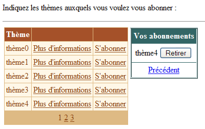
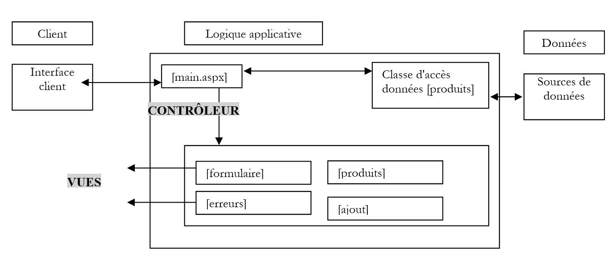
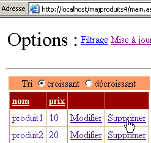

9. Serverkomponenten ASP – 3
9.1. Introduction
Wir setzen unsere Arbeit an der Benutzeroberfläche fort und erweitern die Funktionen der Komponenten [DataList] und [DataGrid], insbesondere im Bereich der Aktualisierung der von ihnen angezeigten Daten
9.2. Verwaltung von Ereignissen im Zusammenhang mit den Daten der Komponenten mit Datenbindung
9.2.1. Das Beispiel
Betrachten wir die folgende Seite:
 |
Die Seite enthält drei Komponenten, die mit einer Datenliste verknüpft sind:
- eine Komponente [DataList] mit dem Namen [DataList1]
- eine Komponente [DataGrid] mit dem Namen [DataGrid1]
- eine Komponente [Repeater] mit dem Namen [Repeater1]
Die zugehörige Datenliste ist das Array {"null", "eins", "zwei", "drei"}. Jedem dieser Datenwerte ist eine Gruppe aus zwei Schaltflächen zugeordnet, die mit „[Infos1]“ und „[Infos2]“ beschriftet sind. Der Benutzer klickt auf eine der Schaltflächen, woraufhin ein Text den Namen der angeklickten Schaltfläche anzeigt. Hier soll gezeigt werden, wie eine Liste von Schaltflächen oder Links verwaltet wird.
9.2.2. Konfiguration der Komponenten
Die Komponente [DataList1] ist wie folgt konfiguriert:
<asp:datalist id="DataList1" ... runat="server">
<SelectedItemStyle ...</SelectedItemStyle>
<HeaderTemplate>
[début]
</HeaderTemplate>
<FooterTemplate>
[fin]
</FooterTemplate>
<ItemStyle ...></ItemStyle>
<ItemTemplate>
<P><%# Container.DataItem %>
<asp:Button runat="server" Text="Infos1" CommandName="infos1"></asp:Button>
<asp:Button runat="server" Text="Infos2" CommandName="infos2"></asp:Button></P>
</ItemTemplate>
<FooterStyle ...></FooterStyle>
<HeaderStyle ...></HeaderStyle>
</asp:datalist>
Wir haben alle Elemente weggelassen, die das Erscheinungsbild des [DataList] betreffen, um uns ausschließlich auf dessen Inhalt zu konzentrieren:
- Der Abschnitt <HeaderTemplate> definiert die Kopfzeile des [DataList] und der Abschnitt <FooterTemplate> dessen Fußzeile.
- Der Abschnitt <ItemTemplate> ist die Anzeigevorlage, die für jeden Datensatz der zugehörigen Datenliste verwendet wird. Er enthält folgende Elemente:
- den Wert des aktuellen Datensatzes aus der der Komponente zugeordneten Datenliste: <%# Container.DataItem %>
- zwei Schaltflächen mit den Bezeichnungen [Infos1] bzw. [Infos2]. Die Klasse [Button] verfügt über ein Attribut [CommandName], das hier verwendet wird. Damit können wir feststellen, welche Schaltfläche ein Ereignis in der Klasse [DataList] ausgelöst hat. Zur Verarbeitung der Klicks auf die Schaltflächen wird es nur einen einzigen Ereignis-Handler geben, der mit der Klasse [DataList] selbst verknüpft ist und nicht mit den Schaltflächen. Dieser Handler erhält eine Information darüber, in welcher Zeile des [DataList] der Klick stattgefunden hat. Anhand des Attributs [CommandName] können wir feststellen, auf welcher Schaltfläche der Zeile der Klick stattgefunden hat.
Die Komponente [Repeater1] ist ganz ähnlich konfiguriert:
<asp:repeater id="Repeater1" runat="server">
<HeaderTemplate>
[début]<hr />
</HeaderTemplate>
<FooterTemplate>
<hr />
[fin]
</FooterTemplate>
<SeparatorTemplate>
<hr />
</SeparatorTemplate>
<ItemTemplate>
<%# Container.DataItem %>
<asp:Button runat="server" Text="Infos1" CommandName="infos1"></asp:Button>
<asp:Button runat="server" Text="Infos2" CommandName="infos2"></asp:Button></P>
</ItemTemplate>
</asp:repeater>
Es wurde lediglich ein Abschnitt <SeparatorTemplate> hinzugefügt, damit die von der Komponente angezeigten aufeinanderfolgenden Daten durch einen horizontalen Balken getrennt werden.
Schließlich ist die Komponente [DataGrid1] wie folgt konfiguriert:
<asp:datagrid id="DataGrid1" ... runat="server" PageSize="2" AllowPaging="True">
<SelectedItemStyle ...></SelectedItemStyle>
<AlternatingItemStyle ...></AlternatingItemStyle>
<ItemStyle ...></ItemStyle>
<HeaderStyle ...></HeaderStyle>
<FooterStyle ....></FooterStyle>
<Columns>
<asp:ButtonColumn Text="Infos1" ButtonType="PushButton" CommandName="Infos1">
</asp:ButtonColumn>
<asp:ButtonColumn Text="Infos2" ButtonType="PushButton" CommandName="Infos2">
</asp:ButtonColumn>
</Columns>
<PagerStyle .... Mode="NumericPages"></PagerStyle>
</asp:datagrid>
Auch hier haben wir die Stilangaben (Farben, Breiten usw.) weggelassen. Wir befinden uns im Modus zur automatischen Spaltengenerierung, dem Standardmodus von [DataGrid]. Das bedeutet, dass es genauso viele Spalten geben wird, wie in der Datenquelle vorhanden sind. Hier gibt es eine. Wir haben zwei weitere Spalten hinzugefügt, die mit <asp:ButtonColumn> markiert sind. Dort definieren wir ähnliche Informationen wie bei den beiden anderen Komponenten sowie den Schaltflächentyp, hier [PushButton]. Der Standardtyp ist [LinkButton], c.a.d. Ein Link. Außerdem werden die Daten [AllowPaging=true] mit einer Seitengröße von zwei Elementen [PageSize=2] paginiert.
9.2.3. Der Layout-Code der Seite
Der Darstellungscode unserer Beispielseite wurde in einer Datei mit dem Namen [main.aspx] abgelegt:
<%@ page codebehind="main.aspx.vb" inherits="vs.main" autoeventwireup="false" %>
<HTML>
<HEAD>
</HEAD>
<body>
<form runat="server">
<P>Gestion d'événements de composants associés à des listes de données</P>
<HR width="100%" SIZE="1">
<table cellSpacing="1" cellPadding="1" bgColor="#ffcc00" border="1">
<tr>
<td ...>DataList</td>
<td ...>DataGrid</td>
<td ...>Repeater</td>
</tr>
<tr>
<td ...>
<asp:datalist id="DataList1" ... runat="server">
<HeaderTemplate>
[début]
</HeaderTemplate>
<FooterTemplate>
[fin]
</FooterTemplate>
<ItemStyle ...></ItemStyle>
<ItemTemplate>
<P><%# Container.DataItem %>
<asp:Button runat="server" Text="Infos1" CommandName="infos1"></asp:Button>
<asp:Button runat="server" Text="Infos2" CommandName="infos2"></asp:Button></P>
</ItemTemplate>
<FooterStyle ...></FooterStyle>
<HeaderStyle ....></HeaderStyle>
</asp:datalist>
<P></P>
</td>
<td ...>
<asp:datagrid id="DataGrid1" ... runat="server" PageSize="2" AllowPaging="True">
<AlternatingItemStyle ...></AlternatingItemStyle>
<ItemStyle ...></ItemStyle>
<HeaderStyle ...></HeaderStyle>
<FooterStyle ...></FooterStyle>
<Columns>
<asp:ButtonColumn Text="Infos1" ButtonType="PushButton" CommandName="Infos1">
</asp:ButtonColumn>
<asp:ButtonColumn Text="Infos2" ButtonType="PushButton" CommandName="Infos2">
</asp:ButtonColumn>
</Columns>
<PagerStyle ... Mode="NumericPages"></PagerStyle>
</asp:datagrid>
</td>
<td ...>
<asp:repeater id="Repeater1" runat="server">
<HeaderTemplate>
[début]<hr />
</HeaderTemplate>
<FooterTemplate>
<hr />
[fin]
</FooterTemplate>
<SeparatorTemplate>
<hr />
</SeparatorTemplate>
<ItemTemplate>
<%# Container.DataItem %>
<asp:Button runat="server" Text="Infos1" CommandName="infos1"></asp:Button>
<asp:Button runat="server" Text="Infos2" CommandName="infos2"></asp:Button></P>
</ItemTemplate>
</asp:repeater>
</td>
</tr>
</table>
<P><asp:label id="lblInfo" runat="server"></asp:label></P>
<P></P>
</form>
</body>
</HTML>
Im obigen Code haben wir den Formatierungscode (Farben, Linien, Schriftgrößen usw.) weggelassen.
9.2.4. Der Steuerungscode der Seite
Der Steuerungscode der Anwendung wurde in die Datei [main.aspx.vb] eingefügt:
Public Class main
Inherits System.Web.UI.Page
' Seitenkomponenten
Protected WithEvents DataList1 As System.Web.UI.WebControls.DataList
Protected WithEvents lblInfo As System.Web.UI.WebControls.Label
Protected WithEvents DataGrid1 As System.Web.UI.WebControls.DataGrid
Protected WithEvents Repeater1 As System.Web.UI.WebControls.Repeater
' die Datenquelle
Protected textes() As String = {"zéro", "un", "deux", "trois"}
Private Sub Page_Load(ByVal sender As System.Object, ByVal e As System.EventArgs) Handles MyBase.Load
If Not IsPostBack Then
'Verknüpfungen mit der Datenquelle
DataList1.DataSource = textes
DataGrid1.DataSource = textes
Repeater1.DataSource = textes
Page.DataBind()
End If
End Sub
Private Sub DataList1_ItemCommand(ByVal source As Object, ByVal e As System.Web.UI.WebControls.DataListCommandEventArgs) Handles DataList1.ItemCommand
' In einer der Zeilen von [datalist] ist ein Ereignis aufgetreten
lblInfo.Text = "Vous avez cliqué sur le bouton [" + e.CommandName + "] de l'élément [" + e.Item.ItemIndex.ToString + "] du composant [DataList]"
End Sub
Private Sub Repeater1_ItemCommand(ByVal source As Object, ByVal e As System.Web.UI.WebControls.RepeaterCommandEventArgs) Handles Repeater1.ItemCommand
' Ein Ereignis ist in einer der Zeilen von [repeater] aufgetreten
lblInfo.Text = "Vous avez cliqué sur le bouton [" + e.CommandName + "] de l'élément [" + e.Item.ItemIndex.ToString + "] du composant [Repeater]"
End Sub
Private Sub DataGrid1_ItemCommand(ByVal source As Object, ByVal e As System.Web.UI.WebControls.DataGridCommandEventArgs) Handles DataGrid1.ItemCommand
' In einer der Zeilen von [datagrid] ist ein Ereignis aufgetreten
lblInfo.Text = "Vous avez cliqué sur le bouton [" + e.CommandName + "] de l'élément [" + e.Item.ItemIndex.ToString + "] de la page [" + DataGrid1.CurrentPageIndex.ToString() + "] du composant [DataGrid]"
End Sub
Private Sub DataGrid1_PageIndexChanged(ByVal source As Object, ByVal e As System.Web.UI.WebControls.DataGridPageChangedEventArgs) Handles DataGrid1.PageIndexChanged
' Seitenwechsel
With DataGrid1
.CurrentPageIndex = e.NewPageIndex
.DataSource = textes
.DataBind()
End With
End Sub
End Class
Anmerkungen:
- Die Datenquelle [textes] ist ein einfaches Array aus Zeichenfolgen. Sie wird mit den drei auf der Seite vorhandenen Komponenten verknüpft
- Diese Verknüpfung wird in der Prozedur [Page_Load] bei der ersten Abfrage hergestellt. Bei den folgenden Abfragen erhalten die drei Komponenten ihre Werte über den Mechanismus von [VIEW_STATE].
- Die drei Komponenten verfügen über einen Handler für das Ereignis [ItemCommand]. Dieses tritt ein, wenn in einer der Zeilen der Komponente auf eine Schaltfläche oder einen Link geklickt wird. Der Handler erhält zwei Informationen:
- Quelle: die Referenz des Objekts (Schaltfläche oder Link), das das Ereignis ausgelöst hat
- a: Informationen zum Ereignis vom Typ [DataListCommandEventArgs], [RepeaterCommandEventArgs] oder [DataGridCommandEventArgs], je nach Fall. Das Argument „a“ enthält verschiedene Informationen. Hier interessieren uns zwei davon:
- a.Item: Stellt die Zeile dar, in der das Ereignis aufgetreten ist, vom Typ [DataListItem], [DataGridItem] oder [RepeaterItem]. Unabhängig vom genauen Typ verfügt das Element [Item] über ein Attribut [ItemIndex], das die Nummer der Zeile [Item] des Containers angibt, zu dem es gehört. Diese Zeilennummer zeigen wir hier an
- a.CommandName: Dies ist das Attribut [CommandName] der Schaltfläche (Button, LinkButton, ImageButton), die das Ereignis ausgelöst hat. Diese Information in Verbindung mit der vorherigen ermöglicht es uns zu erkennen, welche Schaltfläche des Containers das Ereignis [ItemCommand] ausgelöst hat
9.3. Anwendung – Verwaltung einer Abonnentenliste
Nachdem wir nun wissen, wie man Ereignisse abfängt, die innerhalb eines Datencontainers auftreten, stellen wir ein Beispiel vor, das zeigt, wie man diese verwalten kann.
9.3.1. Einführung
Die vorgestellte Anwendung simuliert eine Anwendung für Abonnements von Mailinglisten. Diese werden durch ein Objekt [DataTable] mit drei Spalten definiert:
Name | Typ | Rolle |
Zeichenkette | Primärschlüssel | |
Zeichenkette | Name des Listenthemas | |
Zeichenkette | Eine Beschreibung der Themen, die in der Liste behandelt werden |
Um unser Beispiel nicht zu überfrachten, wird das oben genannte Objekt [DataTable] per Code willkürlich erstellt. In einer realen Anwendung würde es wahrscheinlich von einer Methode einer Datenzugriffsklasse bereitgestellt werden. Die Erstellung der Listentabelle erfolgt in der Prozedur [Application_Start], und die resultierende Tabelle wird in die Anwendung eingebunden. Wir nennen sie die Tabelle [dtThèmes]. Der Benutzer abonniert bestimmte Themen dieser Tabelle. Die Liste seiner Abonnements wird wiederum in einem Objekt [DataTable] gespeichert, das [dtAbonnements] heißt und folgende Struktur aufweist:
Name | Typ | Rolle |
Zeichenkette | Primärschlüssel | |
Zeichenkette | Name des Listenthemas |
Die Single-Page-Anwendung sieht wie folgt aus:
 |
Nr. | Name | Typ | Eigenschaften | Rolle |
DataGrid | Mailinglisten, die zum Abonnieren angeboten werden | |||
DataList | Liste der Abonnements des Benutzers für die oben genannten Listen | |||
Informationsfeld | Informationsfeld zum vom Benutzer ausgewählten Thema mit einem Link [Plus d'informations] | |||
Bezeichnung | ist Teil von [panelInfos] | Themenname | ||
Label | ist Teil von [panelInfos] | Themenbeschreibung | ||
Label | Informationsmeldung der Anwendung |
Unser Beispiel soll die Verwendung der Komponenten [DataGrid] und [DataList] veranschaulichen, insbesondere die Verwaltung von Ereignissen, die auf Zeilenebene dieser Datencontainer auftreten. Daher verfügt die Anwendung über keine Bestätigungsschaltfläche, die beispielsweise die vom Benutzer getroffenen Auswahlen in einer Datenbank speichern würde. Dennoch ist sie realistisch. Wir befinden uns nahe an einer E-Commerce-Anwendung, bei der ein Benutzer Produkte (Abonnements) in seinen Warenkorb legen würde.
9.3.2. Funktionsweise
Die erste Ansicht, die der Benutzer sieht, ist die folgende:
 |
Der Nutzer klickt auf die Links [Plus d'informations], um Informationen zu einem Thema zu erhalten. Diese werden in [panelInfos] angezeigt:

Er klickt auf die Links [S'abonner], um ein Thema zu abonnieren. Die ausgewählten Themen werden in die Komponente [dlAbonnements] aufgenommen:

Möglicherweise möchte der Benutzer eine Liste abonnieren, die er bereits abonniert hat. Eine Meldung weist ihn darauf hin:

Schließlich kann er sein Abonnement für eines der Themen über die oben genannten Schaltflächen [Retirer] kündigen. Es wird keine Bestätigung verlangt. Dies ist hier nicht erforderlich, da der Benutzer das Abonnement problemlos wieder abonnieren kann. So sieht die Ansicht nach der Kündigung des Abonnements für [thème1] aus:

9.3.3. Konfiguration der Datencontainer
Die Komponente [dgThèmes] vom Typ [DataGrid] ist mit einer Quelle vom Typ [DataTable] verknüpft. Die Formatierung erfolgte über die Verknüpfung [Mise en forme automatique] im Eigenschaftenfenster von [DataGrid]. Die Definition seiner Eigenschaften erfolgte über den Link [Générateur de proprités] im selben Fenster. Der generierte Code lautet wie folgt (der Formatierungscode wurde weggelassen):
<asp:datagrid id="dgThèmes" AutoGenerateColumns="False" AllowPaging="True" PageSize="5"
runat="server">
<ItemStyle ...></ItemStyle>
<HeaderStyle ...></HeaderStyle>
<FooterStyle ...></FooterStyle>
<Columns>
<asp:BoundColumn DataField="thème" HeaderText="Thème"></asp:BoundColumn>
<asp:ButtonColumn Text="Plus d'informations" CommandName="infos"></asp:ButtonColumn>
<asp:ButtonColumn Text="S'abonner" CommandName="abonner"></asp:ButtonColumn>
</Columns>
<PagerStyle HorizontalAlign="Center" ... Mode="NumericPages"></PagerStyle>
</asp:datagrid>
Es sind folgende Punkte zu beachten:
Wir legen die anzuzeigenden Spalten im Abschnitt <columns>...</columns> selbst fest | |
für die Paginierung der Daten | |
definiert die Spalte [thème] (HeaderText) aus [DataGrid], die mit der Spalte [thème] der Datenquelle (DataField) verknüpft wird | |
definiert zwei Spalten mit Schaltflächen (oder Links). Um die beiden Links derselben Zeile voneinander zu unterscheiden, wird ihre Eigenschaft [CommandName] verwendet. |
Die Komponente [DataGrid] ist noch nicht vollständig konfiguriert. Dies erfolgt im Controller-Code.
Die Komponente [dlAbonnements] vom Typ [DataList] ist mit einer Quelle vom Typ [DataTable] verknüpft. Die Formatierung erfolgte über den Link [Mise en forme automatique] im Eigenschaftenfenster von [DataList]. Die Definition ihrer Eigenschaften erfolgte direkt im Darstellungscode. Dieser Code lautet wie folgt (der Formatierungscode wurde weggelassen):
<asp:DataList id="dlAbonnements" ... runat="server" >
<HeaderTemplate>
<div align="center">
Vos abonnements</div>
</HeaderTemplate>
<ItemStyle ...></ItemStyle>
<ItemTemplate>
<TABLE>
<TR>
<TD><%#Container.DataItem („Thema“)%></TD>
<TD>
<asp:Button id="lnkRetirer" CommandName="retirer" runat="server" Text="Retirer" /></TD>
</TR>
</TABLE>
</ItemTemplate>
<HeaderStyle ...></HeaderStyle>
</asp:DataList>
definiert den Kopftext von [DataList] | |
definiert das aktuelle Element des [DataList] – hier wurde eine Tabelle mit zwei Spalten und einer Zeile platziert. Die erste Zelle enthält den Namen des Themas, das der Benutzer abonnieren möchte, die andere die Schaltfläche [Retirer], mit der er seine Auswahl rückgängig machen kann. |
9.3.4. Die Übersichtsseite
Der Darstellungscode [main.aspx] lautet wie folgt:
<%@ page src="main.aspx.vb" inherits="main" autoeventwireup="false" %>
<HTML>
<HEAD>
<title></title>
</HEAD>
<body>
<P>Indiquez les thèmes auxquels vous voulez vous abonner :</P>
<HR width="100%" SIZE="1">
<form runat="server">
<table>
<tr>
<td vAlign="top">
<asp:datagrid id="dgThèmes" ... runat="server">
...
</asp:datagrid>
</td>
<td vAlign="top">
<asp:DataList id="dlAbonnements" ... runat="server" GridLines="Horizontal" ShowFooter="False">
....
</asp:DataList>
</td>
<td vAlign="top">
<asp:Panel ID="panelInfo" Runat="server" EnableViewState="False">
<TABLE>
<TR>
<TD bgColor="#99cccc">
<asp:Label id="lblThème" runat="server"></asp:Label></TD>
</TR>
<TR>
<TD bgColor="#ffff99">
<asp:Label id="lblDescription" runat="server"></asp:Label></TD>
</TR>
</TABLE>
</asp:Panel>
</td>
</tr>
</table>
<P>
<asp:Label id="lblInfo" runat="server" EnableViewState="False"></asp:Label></P>
</form>
</body>
</HTML>
9.3.5. Die Steuerdateien
Die Steuerung verteilt sich auf die Dateien [global.asax] und [main.aspx]. Die Datei [global.asax] lautet wie folgt:
Die zugehörige Datei [global.asax.vb] enthält den folgenden Code:
Imports System.Web
Imports System.Web.SessionState
Imports System.Data
Imports System
Public Class global
Inherits System.Web.HttpApplication
Sub Application_Start(ByVal sender As Object, ByVal e As EventArgs)
' Die Datenquelle wird initialisiert
Dim thèmes As New DataTable
' Spalten
With thèmes.Columns
.Add("id", GetType(System.Int32))
.Add("thème", GetType(System.String))
.Add("description", GetType(System.String))
End With
' Die Spalte „id“ wird zum Primärschlüssel
thèmes.Constraints.Add("cléprimaire", thèmes.Columns("id"), True)
' Zeilen
Dim ligne As DataRow
For i As Integer = 0 To 10
ligne = thèmes.NewRow
ligne.Item("id") = i.ToString
ligne.Item("thème") = "thème" + i.ToString
ligne.Item("description") = "description du thème " + i.ToString
thèmes.Rows.Add(ligne)
Next
' Die Datenquelle wird in die Anwendung eingebunden
Application("thèmes") = thèmes
End Sub
Sub Session_Start(ByVal sender As Object, ByVal e As EventArgs)
' Sitzungsbeginn – eine leere Abonnementtabelle wird angelegt
Dim dtAbonnements As New DataTable
With dtAbonnements
' die Spalten
.Columns.Add("id", GetType(String))
.Columns.Add("thème", GetType(String))
' der Primärschlüssel
.PrimaryKey = New DataColumn() {.Columns("id")}
End With
' Die Tabelle wird in die Sitzung aufgenommen
Session.Item("abonnements") = dtAbonnements
End Sub
End Class
Die Prozedur [Application_Start], die ausgeführt wird, wenn die Anwendung ihre allererste Anfrage erhält, erstellt das [DataTable] der Themen, die abonniert werden können. Es wird willkürlich mit Code erstellt. Erinnern wir uns an die Technik, die wir bereits kennengelernt haben. Es wird in folgender Reihenfolge erstellt:
- ein leeres [DataTable]-Objekt ohne Struktur und ohne Daten
- die Tabellenstruktur, indem man ihre Spalten definiert (Name und Datentyp der darin enthaltenen Daten)
- die Zeilen der Tabelle, die die eigentlichen Daten darstellen
Wir haben hier einen Primärschlüssel hinzugefügt. Die Spalte „id“ dient als Primärschlüssel. Es gibt verschiedene Möglichkeiten, dies auszudrücken. Hier haben wir eine Einschränkung verwendet. In SQL ist eine Einschränkung eine Regel, die die Daten einer Zeile erfüllen müssen, damit diese Zeile zu einer Tabelle hinzugefügt werden kann. Es gibt alle möglichen Arten von Einschränkungen. Die Einschränkung „Primary Key“ erzwingt, dass die Spalte, auf die sie angewendet wird, eindeutige und nicht leere Werte enthält. Ein Primärschlüssel kann tatsächlich aus einem Ausdruck bestehen, der Werte aus mehreren Spalten einbezieht. [DataTable].Constraints ist die Sammlung der Einschränkungen einer bestimmten Tabelle. Um eine Einschränkung hinzuzufügen, wird die Methode [DataTable.Constraints.Add] verwendet. Diese verfügt über mehrere Signaturen. Hier wurde die Methode [Add(Byval nom as String, Byval colonne as DataColumn, Byval cléPrimaire as Boolean)] verwendet:
Name der Einschränkung – kann beliebig sein | |
Spalte, die als Primärschlüssel dienen soll – vom Typ [DataColumn] | |
muss [vrai] lauten, um [colonne] zum Primärschlüssel zu machen. Bei [cléPrimaire=false] gilt lediglich die Einschränkung auf eindeutige Werte für [colonne] |
Um die Spalte mit dem Namen „id“ zum Primärschlüssel der Tabelle [dtAbonnements] zu machen, schreibt man also:
Die Prozedur [Session_Start] wird ausgeführt, wenn die Anwendung die erste Anfrage eines Kunden erhält. Sie dient dazu, kundenspezifische Objekte anzulegen, die über die verschiedenen Anfragen des Kunden hinweg bestehen bleiben müssen. Die Prozedur erstellt die Tabelle [DataTable] mit den Abonnements des Kunden. Es wird lediglich die Struktur erstellt, da diese Tabelle zu Beginn leer ist. Sie wird im Laufe der Anfragen gefüllt. Auch hier dient die Spalte „id“ als Primärschlüssel. Zur Deklaration dieser Einschränkung wurde eine andere Technik verwendet:
ist das Array der Spalten, die den Primärschlüssel bilden – hier wurde ein Array mit einem Element deklariert: die Spalte mit dem Namen „id“ |
Wenn die Anfrage des Kunden den Controller [main.aspx] erreicht, stehen die beiden Objekte [DataTable] in der Anwendung für die Themen-Tabelle und in der Sitzung für die Abonnement-Tabelle zur Verfügung. Der Controller [main.aspx.vb] sieht wie folgt aus:
Imports System.Data
Public Class main
Inherits System.Web.UI.Page
Protected WithEvents dgThèmes As System.Web.UI.WebControls.DataGrid
Protected WithEvents lblThème As System.Web.UI.WebControls.Label
Protected WithEvents lblDescription As System.Web.UI.WebControls.Label
Protected WithEvents dlAbonnements As System.Web.UI.WebControls.DataList
Protected WithEvents lblInfo As System.Web.UI.WebControls.Label
Protected WithEvents panelInfo As System.Web.UI.WebControls.Panel
Protected dtThèmes As DataTable
Protected dtAbonnements As DataTable
Private Sub Page_Load(ByVal sender As System.Object, ByVal e As System.EventArgs) Handles MyBase.Load
...
End Sub
Private Sub liaisons()
...
End Sub
Private Sub dgThèmes_PageIndexChanged(ByVal source As Object, ByVal e As System.Web.UI.WebControls.DataGridPageChangedEventArgs) Handles dgThèmes.PageIndexChanged
...
End Sub
Private Sub dgThèmes_ItemCommand(ByVal source As Object, ByVal e As System.Web.UI.WebControls.DataGridCommandEventArgs) Handles dgThèmes.ItemCommand
...
End Sub
Private Sub infos(ByVal id As String)
...
End Sub
Private Sub abonner(ByVal id As String)
...
End Sub
Private Sub dlAbonnements_ItemCommand(ByVal source As Object, ByVal e As System.Web.UI.WebControls.DataListCommandEventArgs) Handles dlAbonnements.ItemCommand
...
End Sub
End Class
Die Hauptaufgabe der Prozedur [Page_Load] besteht darin:
- die beiden Tabellen [dtThèmes] und [dtAbonnements] abzurufen, die sich jeweils in der Anwendung und in der Sitzung befinden, um sie für alle Methoden der Seite verfügbar zu machen
- die Daten aus diesen beiden Quellen mit ihren jeweiligen Containern zu verknüpfen. Dies geschieht nur bei der ersten Abfrage. Bei nachfolgenden Abfragen muss die Verknüpfung nicht systematisch durchgeführt werden, und wenn sie durchgeführt werden muss, muss manchmal ein Ereignis abgewartet werden, das nach [Page_Load] erfolgt, um sie durchzuführen.
Der Code von [Page_Load] lautet wie folgt:
Private Sub Page_Load(ByVal sender As System.Object, ByVal e As System.EventArgs) Handles MyBase.Load
' Die Datenquellen werden abgerufen
dtThèmes = CType(Application("thèmes"), DataTable)
dtAbonnements = CType(Session("abonnements"), DataTable)
' Datenverknüpfung
If Not IsPostBack Then
liaisons()
End If
' – bestimmte Informationen werden ausgeblendet
panelInfo.Visible = False
End Sub
Private Sub liaisons()
': Die Datenquelle wird mit der Komponente [datagrid] verknüpft
With dgThèmes
.DataSource = dtThèmes
.DataKeyField = "id"
End With
' Die Datenquelle wird mit der Komponente [datalist] verknüpft
With dlAbonnements
.DataSource = dtAbonnements
.DataKeyField = "id"
End With
' Die Daten werden den Komponenten zugewiesen
Page.DataBind()
End Sub
Im Verfahren [liaisons] verwenden wir die Eigenschaft [DataKeyField] der Komponenten [DataList] und [DataGrid], um die Spalte der Datenquelle zu definieren, die zur eindeutigen Identifizierung der Zeilen der Container dient. In der Regel ist diese Spalte der Primärschlüssel der Datenquelle, dies ist jedoch nicht zwingend erforderlich. Es reicht aus, wenn die Spalte keine Duplikate und keine leeren Werte enthält. Für den Container [dgThèmes] dient die Spalte „id“ der Quelle [dtThèmes] als Primärschlüssel, und für den Container [dlAbonnements] ist es die Spalte „id“ der Quelle [dtAbonnements]. Es ist nicht erforderlich, dass die Spalte, die als Primärschlüssel des Containers dient, von diesem angezeigt wird. In diesem Fall zeigt keiner der beiden Container die Primärschlüsselspalte an. Der Vorteil eines Primärschlüssels in einem Container besteht darin, dass sich damit in der Datenquelle leicht die Informationen zu der Zeile des Containers finden lassen, in der ein Ereignis aufgetreten ist. Tatsächlich kommt es häufig vor, dass man ausgehend von der Zeile eines Containers, in der ein Ereignis aufgetreten ist, Maßnahmen an der entsprechenden Zeile der damit verknüpften Datenquelle vornehmen muss. Der Primärschlüssel erleichtert diese Arbeit.
Die Paginierung von [DataGrid] wird auf herkömmliche Weise verwaltet:
Private Sub dgThèmes_PageIndexChanged(ByVal source As Object, ByVal e As System.Web.UI.WebControls.DataGridPageChangedEventArgs) Handles dgThèmes.PageIndexChanged
' Seitenwechsel
dgThèmes.CurrentPageIndex = e.NewPageIndex
' Verknüpfung
liaisons()
End Sub
Die Aktionen für die Links [Plus d'informations] und [S'abonner] werden von der Prozedur [dgThèmes_ItemCommand] verwaltet:
Private Sub dgThèmes_ItemCommand(ByVal source As Object, ByVal e As System.Web.UI.WebControls.DataGridCommandEventArgs) Handles dgThèmes.ItemCommand
' Ereignis auf einer Zeile von [datagrid]
Dim commande As String = e.CommandName
Select Case commande
Case "infos"
infos(dgThèmes.DataKeys(e.Item.ItemIndex))
Case "abonner"
abonner(dgThèmes.DataKeys(e.Item.ItemIndex))
End Select
' Verknüpfung
liaisons()
End Sub
Zur Unterscheidung der beiden Links wird das Attribut [CommandName] verwendet. Je nach Wert dieses Attributs wird die Prozedur [infos] oder [abonner] aufgerufen, wobei in beiden Fällen der Schlüssel „id“ übergeben wird, der dem Element von [DataGrid] zugeordnet ist, bei dem das Ereignis aufgetreten ist. Mit diesen Informationen zeigt die Prozedur [info] die Informationen zu dem vom Benutzer ausgewählten Thema an:
Private Sub infos(ByVal id As String)
' Informationen zum Schlüssel-ID-Thema
' Es wird die Zeile aus [datatable] abgerufen, die dem Schlüssel entspricht
Dim ligne As DataRow
ligne = dtThèmes.Rows.Find(id)
If Not ligne Is Nothing Then
' die Informationen werden angezeigt
lblThème.Text = CType(ligne("thème"), String)
lblDescription.Text = CType(ligne("description"), String)
panelInfo.Visible = True
End If
End Sub
Da die Tabelle [dtThèmes] einen Primärschlüssel besitzt, ermöglicht die Methode [dtThèmes.Rows.Find("P")] das Auffinden der Zeile mit dem Primärschlüssel P. Wird diese gefunden, erhält man ein Objekt [DataRow]. Hier müssen wir nach der Zeile mit dem Primärschlüssel [id] suchen, wobei [id] als Parameter übergeben wird. Wird die Zeile gefunden, werden die Informationen [thème] und [description] dieser Zeile in das Informationsfeld übernommen, das anschließend sichtbar gemacht wird.
Die Prozedur [abonner(id)] soll das Schlüsselthema [id] zur Liste der Abonnements hinzufügen. Ihr Code lautet wie folgt:
Private Sub abonner(ByVal id As String)
' Abonnement für das Schlüssel-ID-Thema
' Die Zeile von [datatable], die dem Schlüssel entspricht, wird abgerufen
Dim ligne As DataRow
ligne = dtThèmes.Rows.Find(id)
If Not ligne Is Nothing Then
' Es wird geprüft, ob bereits ein Abonnement besteht
Dim abonnement As DataRow
abonnement = dtAbonnements.Rows.Find(id)
If Not abonnement Is Nothing Then
' Der Fehler wird gemeldet
lblInfo.Text = "Vous êtes déjà abonné au thème [" + ligne("thème") + "]"
Else
' Das Thema wird zu den Abonnements hinzugefügt
abonnement = dtAbonnements.NewRow
abonnement("id") = id
abonnement("thème") = ligne("thème")
dtAbonnements.Rows.Add(abonnement)
' man stellt die Verknüpfungen her
liaisons()
End If
End If
End Sub
In der Themenliste [dtThèmes] wird zunächst nach der Schlüsselzeile [id] gesucht. Wird diese gefunden, wird überprüft, ob dieses Thema nicht bereits in der Abonnementliste vorhanden ist, um eine doppelte Eintragung zu vermeiden. Ist dies der Fall, wird eine Fehlermeldung angezeigt. Andernfalls wird ein neues Abonnement zur Tabelle [dtAbonnements] hinzugefügt und die Verknüpfungen der Datenlistenkomponenten zu ihren jeweiligen Quellen hergestellt.
Wenn der Benutzer auf eine Schaltfläche [Retirer] klickt, muss ein Element aus der Tabelle [dtAbonnements] gelöscht werden. Dies erfolgt durch die folgende Prozedur:
Private Sub dlAbonnements_ItemCommand(ByVal source As Object, ByVal e As System.Web.UI.WebControls.DataListCommandEventArgs) Handles dlAbonnements.ItemCommand
' Ein Abonnement wird entfernt
Dim commande As String = e.CommandName
If commande = "retirer" Then
' Das Abonnement von [datatable] wird entfernt
With dtAbonnements.Rows
.Remove(.Find(dlAbonnements.DataKeys(e.Item.ItemIndex)))
End With
' Verknüpfungen
liaisons()
End If
End Sub
Zunächst wird das Attribut [CommandName] des Elements überprüft, das das Ereignis ausgelöst hat. Dies ist eigentlich ziemlich überflüssig, da die Schaltfläche [Retirer] das einzige Steuerelement ist, das in der Komponente [DataList] ein Ereignis auslösen kann. Es besteht also keine Mehrdeutigkeit. Um eine Zeile aus einem Objekt [DataTable] zu löschen, verwendet man die Methode [DataList.Remove(DataRow)], die die als Parameter übergebene Zeile vom Typ [DataRow] aus der Tabelle entfernt. Diese wird von der Methode [DataList.Find] gefunden, an die der Primärschlüssel der gesuchten Zeile übergeben wurde. Sobald die Zeile gelöscht ist, werden die Daten mit den Komponenten verknüpft
9.4. Verwalten einer paginierten Komponente [DataList]
Wir greifen das vorherige Beispiel wieder auf, um die Komponente [DataList], die die Liste der Abonnements des Benutzers darstellt, zu paginieren. Im Gegensatz zur Komponente [DataGrid] bietet die Komponente [DataList] keine Funktionen zur Paginierung. Wir werden sehen, dass die Umsetzung der Paginierung komplex ist, was uns die automatische Paginierung der Komponente [DataGrid] umso mehr schätzen lässt.
9.4.1. Funktionsweise
Der einzige Unterschied besteht in der Paginierung der Komponente [DataList]. Die Seiten enthalten jeweils zwei Abonnements. Wenn der Benutzer fünf Abonnements hat, gibt es drei Seiten. Die erste Seite sieht wie folgt aus:

Die zweite Seite wird über den Link [Suivant] aufgerufen:

Die dritte Seite:

Es ist zu beachten, dass die Links [Précédent] und [Suivant] nur sichtbar sind, wenn der aktuellen Seite jeweils eine vorhergehende bzw. eine nachfolgende Seite folgt.
9.4.2. Darstellungscode
Die Links [Précédent] und [Suivant] erhält man, indem man dem Link [DataList] ein <FooterTemplate>-Tag hinzufügt:
<asp:datalist id="dlAbonnements" runat="server" ...>
....
<FooterTemplate>
<asp:LinkButton id="lnkPrecedent" runat="server" CommandName="precedent">Précédent</asp:LinkButton>
<asp:LinkButton id="lnkSuivant" runat="server" CommandName="suivant">Suivant</asp:LinkButton>
</FooterTemplate>
....
</asp:datalist>
9.4.3. Prüfziffer
Die zugehörige Datei [global.asax.vb] entwickelt sich wie folgt:
...
Public Class global
Inherits System.Web.HttpApplication
Sub Application_Start(ByVal sender As Object, ByVal e As EventArgs)
...
End Sub
Sub Session_Start(ByVal sender As Object, ByVal e As EventArgs)
' Sitzungsbeginn – es wird eine leere Abonnementtabelle angelegt
Dim dtAbonnements As New DataTable
With dtAbonnements
' die Spalten
.Columns.Add("id", GetType(String))
.Columns.Add("thème", GetType(String))
' der Primärschlüssel
.PrimaryKey = New DataColumn() {.Columns("id")}
End With
' Die Tabelle wird in die Sitzung aufgenommen
Session.Item("abonnements") = dtAbonnements
' Die aktuelle Seite ist Seite 0
Session.Item("pAC") = 0
' Die Anzahl der Abonnements auf dieser Seite beträgt 0
Session.Item("nbAC") = 0
End Sub
Neben der Abonnementtabelle [dtAbonnements] werden zwei weitere Informationen in die Sitzung aufgenommen:
vom Typ [Integer] – dies ist die Nummer der aktuell angezeigten Seite bei der letzten Anfrage | |
vom Typ [Integer] – Anzahl der Zeilen, die auf der vorherigen aktuellen Seite angezeigt wurden |
Zu Beginn einer Sitzung sind sowohl die Nummer der aktuellen Seite als auch die Anzahl der Zeilen dieser Seite gleich Null.
Der Controller [main.aspx.vb] entwickelt sich wie folgt:
....
Public Class main
Inherits System.Web.UI.Page
....
' Anwendungsdaten
Protected dtThèmes As DataTable
Protected dtAbonnements As DataTable
Protected dtPA As DataTable ' la page d'abonnements affichée
Protected Const nbAP As Integer = 2 ' nbre abonnements par page
Protected pAC As Integer ' page abonnement courant
Protected nbAC As Integer ' nombre d'abonnements dans page courante
Private Sub Page_Load(ByVal sender As System.Object, ByVal e As System.EventArgs) Handles MyBase.Load
...
End Sub
Private Sub terminer()
...
End Sub
Private Sub dgThèmes_PageIndexChanged(ByVal source As Object, ByVal e As System.Web.UI.WebControls.DataGridPageChangedEventArgs) Handles dgThèmes.PageIndexChanged
...
End Sub
Private Sub dgThèmes_ItemCommand(ByVal source As Object, ByVal e As System.Web.UI.WebControls.DataGridCommandEventArgs) Handles dgThèmes.ItemCommand
...
End Sub
Private Sub infos(ByVal id As String)
...
End Sub
Private Sub abonner(ByVal id As String)
...
End Sub
Private Sub dlAbonnements_ItemCommand(ByVal source As Object, ByVal e As System.Web.UI.WebControls.DataListCommandEventArgs) Handles dlAbonnements.ItemCommand
...
End Sub
Private Sub changePAC()
...
End Sub
Private Sub setLiens(ByVal ctl As Control, ByVal blPrec As Boolean, ByVal blSuivant As Boolean)
...
End Sub
End Class
Darin werden neue Daten im Zusammenhang mit der Paginierung der Abonnements definiert:
Protected dtPA As DataTable ' la page d'abonnements affichée
Protected Const nbAP As Integer = 2 ' nbre abonnements par page
Protected pAC As Integer ' page abonnement courant
Protected nbAC As Integer ' nombre d'abonnements dans page courante
Einige dieser Informationen werden in der Sitzung gespeichert und bei jeder Anfrage in der Prozedur [Page_Load] abgerufen:
Private Sub Page_Load(ByVal sender As System.Object, ByVal e As System.EventArgs) Handles MyBase.Load
' Die Datenquellen werden abgerufen
dtThèmes = CType(Application("thèmes"), DataTable)
dtAbonnements = CType(Session("abonnements"), DataTable)
' sowie die Informationen zur Anzeige der Abonnements
pAC = CType(Session("pAC"), Integer)
nbAC = CType(Session("nbAC"), Integer)
' Datenverknüpfung
If Not IsPostBack Then
' Anzeige einer leeren Abonnementliste
terminer()
End If
' Bestimmte Informationen werden ausgeblendet
panelInfo.Visible = False
End Sub
Die abgerufenen Informationen [pAC] und [nbAC] sind Informationen zur Abonnementseite, die bei der vorherigen Anfrage angezeigt wurde:
Dies ist die Nummer der aktuellen Seite, die bei der vorherigen Anfrage angezeigt wurde | |
Anzahl der auf dieser aktuellen Seite angezeigten Zeilen |
Die Methode [terminer] stellt die Verknüpfungen zwischen den Komponenten und ihren Datenquellen her, so wie es die Methode [liaisons] in der vorherigen Anwendung tat. Neu ist hier die Verknüpfung von [DataList] mit der Tabelle [dtPA], bei der es sich um die anzuzeigende Abonnementseite handelt:
Private Sub terminer()
' Die Datenquelle wird mit der Komponente [datagrid] verknüpft
With dgThèmes
.DataSource = dtThèmes
.DataKeyField = "id"
End With
' Die Abonnementseite wird unter Berücksichtigung der aktuellen Seite pAC mit der Komponente [datalist] verknüpft
changePAC()
' wird die Seite p angezeigt
With dlAbonnements
.DataSource = dtPA
.DataKeyField = "id"
End With
' Die Daten werden den Komponenten zugewiesen
Page.DataBind()
' Verwaltung der Verknüpfungen [précédent] und [suivant] von [datalist]
Dim blprec As Boolean = pAC <> 0
Dim blsuivant As Boolean = pAC <> (dtAbonnements.Rows.Count - 1) \ nbAP
Dim nbLiensTrouvés As Integer = 0
setLiens(dlAbonnements, blprec, blsuivant, nbLiensTrouvés)
' Die Informationen zur aktuellen Seite werden in der Sitzung gespeichert
Session("pAC") = pAC
Session("nbAC") = dtPA.Rows.Count
End Sub
Folgende Punkte sind zu beachten:
- Die Quelle [dtPA] hängt von der aktuellen Seitenzahl [pAC] ab, die angezeigt werden soll. Die Variable [pAC] ist eine globale Variable der Klasse, die von den Methoden bearbeitet wird, die diese aktuelle Seitenzahl ändern müssen. Die Methode [changePAC] ist für den Aufbau der Tabelle [dtPA] zuständig, die mit der Komponente [dlAbonnements] verknüpft wird.
- Die Methode [setLiens] dient dazu, die Links [Précédent] und [Suivant] ein- bzw. auszublenden, je nachdem, ob der angezeigten aktuellen Seite [pAC] eine vorhergehende und eine nachfolgende Seite vorangeht bzw. folgt. Sie hat vier Parameter:
- [dlAbonnements]: das Steuerelement [DataList], dessen Steuerelementbaumstruktur wir durchsuchen werden, um die beiden Links zu finden. Obwohl sich diese beiden Links an einer bestimmten Stelle befinden, nämlich in der Fußzeile von [DataList], scheint es keine einfache Möglichkeit zu geben, direkt auf sie zu verweisen. Jedenfalls wurde hier keine gefunden.
- [blPrecedent]: Boolescher Wert, der der Eigenschaft [visible] des Links [Precedent] zugewiesen werden soll – ist „wahr“, wenn die aktuelle Seite ungleich 0 ist
- [blSuivant]: Boolescher Wert, der der Eigenschaft [visible] des Links [Suivant] zugewiesen werden soll – ist wahr, wenn die aktuelle Seite nicht die letzte Seite der Abonnementliste ist
- [nbLiensTrouvés]: Ein Ausgabeparameter, der die Anzahl der gefundenen Links zählt. Sobald diese Anzahl zwei beträgt, wird die Methode beendet.
- Die Informationen [pAC] und [nbAC] werden für die nächste Anfrage in der Sitzung gespeichert.
Die Methode [changePAC] erstellt die Tabelle [dtPA], die mit der Komponente [dlAbonnements] verknüpft wird. Dies geschieht anhand der Nummer [pAC] der aktuell anzuzeigenden Seite. Die Tabelle [dtPA] soll bestimmte Zeilen aus der Abonnementtabelle [dtAbonnements] anzeigen. Zur Erinnerung: Diese Tabelle wird in der Sitzung gespeichert und im Laufe der Abfragen aktualisiert (erweitert oder reduziert). Zunächst legen wir das Intervall [premier,dernier] für die Zeilennummern der Tabelle [dtAbonnements] fest, die die Tabelle [dtPA] anzeigen soll:
Private Sub changePAC()
' macht die Seite pAC zur aktuellen Seite der Abonnements
' Verwaltung der Seiten von [datalist]
Dim nbAbonnements = dtAbonnements.Rows.Count
Dim dernièrePage = (nbAbonnements - 1) \ nbAP
' erstes und letztes Abonnement
If pAC < 0 Then pAC = 0
If pAC > dernièrePage Then pAC = dernièrePage
Dim premier As Integer = pAC * nbAP
Dim dernier As Integer = (pAC + 1) * nbAP - 1
If dernier > nbAbonnements - 1 Then dernier = nbAbonnements - 1
Anschließend kann die Tabelle [dtPA] angelegt werden. Zunächst wird ihre Struktur [id,thème] definiert, anschließend wird sie gefüllt, indem die Zeilen aus [dtAbonnements] kopiert werden, deren Nummern im zuvor berechneten Intervall [premier,dernier] liegen.
' Erstellung der Datentabelle dtpa
dtPA = New DataTable
With dtPA
' die Spalten
.Columns.Add("id", GetType(String))
.Columns.Add("thème", GetType(String))
' Der Primärschlüssel
.PrimaryKey = New DataColumn() {.Columns("id")}
End With
Dim abonnement As DataRow
For i As Integer = premier To dernier
abonnement = dtPA.NewRow
With abonnement
.Item("id") = dtAbonnements.Rows(i).Item("id")
.Item("thème") = dtAbonnements.Rows(i).Item("thème")
End With
dtPA.Rows.Add(abonnement)
Next
End Sub
Am Ende der Methode [changePAC] wurde die Tabelle [dtPA] aufgebaut und kann mit der Komponente [DataList] verknüpft werden. Dies geschieht in der Methode [terminer]. In derselben Methode wird die Prozedur [setLiens] verwendet, um den Status der Verknüpfungen [Précédent] und [Suivant] der [DataList] festzulegen. Der Code dieser Prozedur lautet wie folgt:
Private Sub setLiens(ByVal ctl As Control, ByVal blPrec As Boolean, ByVal blSuivant As Boolean, ByRef nbLiensTrouvés As Integer)
' Es wird nach den Verknüpfungen [précédent] und [suivant] gesucht
' in der Kontrollstruktur von [datalist]
' Wurden alle Verknüpfungen gefunden?
If nbLiensTrouvés = 2 Then Exit Sub
' Überprüfung der untergeordneten Kontrollen
Dim c As Control
For Each c In ctl.Controls
' Wir arbeiten zunächst in der Tiefe – die Verknüpfungen befinden sich am Ende des Baums
setLiens(c, blPrec, blSuivant, nbLiensTrouvés)
' Link [Précédent]?
If c.ID = "lnkPrecedent" Then
CType(c, LinkButton).Visible = blPrec
nbLiensTrouvés += 1
End If
' Link [Suivant]?
If c.ID = "lnkSuivant" Then
CType(c, LinkButton).Visible = blSuivant
nbLiensTrouvés += 1
End If
Next
End Sub
Der Vorgang ist rekursiv. Zunächst wird unter den untergeordneten Steuerelementen der Komponente [dlAbonnements] nach den Komponenten mit den Namen [lnkPrecedent] und [lnkSuivant], die die Identitäten (Attribut ID) der beiden Paginierungslinks darstellen. Sie sucht zunächst ausgehend vom unteren Ende des Steuerelementbaums danach, da sie sich dort befinden. Sobald ein Link gefunden wurde, wird der Zähler [nbLiensTrouvés] erhöht und die Eigenschaft [visible] des Links mit einem Wert gefüllt, der als Parameter an die Prozedur übergeben wurde. Sobald beide Links gefunden wurden, wird der Steuerelementbaum nicht mehr durchsucht und die rekursive Prozedur wird beendet.
Wir haben bereits erwähnt, dass die Methode [changePAC], die die Datenquelle [dtPA] für die Komponente [dlAbonnements] festlegt, mit der Nummer [pAC] der aktuell anzuzeigenden Seite arbeitet. Mehrere Prozeduren ändern diese Nummer:
Private Sub abonner(ByVal id As String)
' Abonnement für das Thema mit der Schlüssel-ID
..
' Das Thema wird zu den Abonnements hinzugefügt
..
' Aktualisierung der aktuellen Seitenzahl – dies ist nun die letzte Seite
pAC = (dtAbonnements.Rows.Count - 1) \ nbAP
' Datenverknüpfungen
terminer()
End If
End Sub
Nach dem Hinzufügen eines Abonnements erscheint dieses am Ende der Abonnementliste. Daher wird die letzte Seite der Abonnements angezeigt, damit der Benutzer den vorgenommenen Eintrag sehen kann.
Private Sub dlAbonnements_ItemCommand(ByVal source As Object, ByVal e As System.Web.UI.WebControls.DataListCommandEventArgs) Handles dlAbonnements.ItemCommand
' Abonnement wird entfernt
Dim commande As String = e.CommandName
Select Case commande
Case "retirer"
' Das Abonnement wird aus dem [datatable] entfernt
With dtAbonnements.Rows
.Remove(.Find(dlAbonnements.DataKeys(e.Item.ItemIndex)))
End With
' Soll die aktuelle Seite gewechselt werden?
nbAC -= 1
If nbAC = 0 Then pAC -= 1
Case "precedent"
' Aktuelle Seite wechseln
pAC -= 1
Case "suivant"
' Aktuelle Seite wechseln
pAC += 1
End Select
' Datenverknüpfungen
terminer()
End Sub
- [nbAC] ist die Anzahl der Zeilen, die auf der aktuellen Seite vor der Kündigung eines Abonnements angezeigt werden. Wenn die neue Zeilenzahl der Seite 0 beträgt, wird die aktuelle Seitenzahl [pAC] um eins verringert.
- Bei einem Klick auf den Link [Precedent] wird die aktuelle Seitenzahl [pAC] um eins verringert.
- Wenn auf den Link [Suivant] geklickt wird, wird die aktuelle Seitenzahl [pAC] um eins erhöht.
Die übrigen Abläufe bleiben unverändert.
9.4.4. Fazit
Anhand dieses Beispiels haben wir gezeigt, dass wir eine Komponente [DataList] paginieren können. Diese Paginierung ist jedoch schwierig, und es ist ratsam, sich nach Möglichkeit auf die automatische Paginierung der Komponente [DataGrid] zu verlassen. Dieses Beispiel hat uns außerdem gezeigt, wie man auf die Komponenten in der Fußzeile der Komponente [DataList] zugreifen kann.
9.5. Zugriffsklasse für eine Produktdatenbank
Wir befassen uns erneut mit der bereits verwendeten Datenbank ACCESS [produits]. Zur Erinnerung: Sie enthält eine einzige Tabelle namens [liste], deren Struktur wie folgt aussieht:
 |  |
Wir werden eine Zugriffsklasse für die Tabelle [liste] erstellen, mit der diese gelesen und aktualisiert werden kann. Außerdem werden wir einen Konsolen-Client erstellen, der die vorgenannte Klasse nutzt, um die Tabelle zu aktualisieren. In einem zweiten Schritt werden wir einen Web-Client erstellen, der dieselbe Aufgabe übernimmt.
9.5.1. Die Klasse ExceptionProduits
Die Klasse [Exception] verfügt über einen Konstruktor, der eine Fehlermeldung als Parameter akzeptiert. Wir möchten hier jedoch eine Ausnahmeklasse verwenden, deren Konstruktor eine Liste von Fehlermeldungen anstelle einer einzelnen Fehlermeldung akzeptiert. Dies wird die unten stehende Klasse [ExceptionProduits] sein:
Public Class ExceptionProduits
Inherits Exception
' Fehlermeldungen im Zusammenhang mit der Ausnahme
Private _erreurs As ArrayList
' Konstruktor
Public Sub New(ByVal erreurs As ArrayList)
Me._erreurs = erreurs
End Sub
' Eigenschaft
Public ReadOnly Property erreurs() As ArrayList
Get
Return _erreurs
End Get
End Property
End Class
9.5.2. Die Struktur [sProduit]
Die Struktur [produit] repräsentiert ein Produkt [id, nom, prix]:
' Struktur sProduit
Public Structure sProduit
' Felder
Private _id As Integer
Private _nom As String
Private _prix As Double
' Eigenschaft „id“
Public Property id() As Integer
Get
Return _id
End Get
Set(ByVal Value As Integer)
_id = Value
End Set
End Property
' Eigenschaft „name“
Public Property nom() As String
Get
Return _nom
End Get
Set(ByVal Value As String)
If IsNothing(Value) OrElse Value.Trim = String.Empty Then Throw New Exception
_nom = Value
End Set
End Property
' Eigenschaft „Preis“
Public Property prix() As Double
Get
Return _prix
End Get
Set(ByVal Value As Double)
If IsNothing(Value) OrElse Value < 0 Then Throw New Exception
_prix = Value
End Set
End Property
End Structure
Die Struktur lässt nur gültige Daten für die Felder [nom] und [prix] zu.
9.5.3. Die Klasse „Produkte“
Die Klasse [Produits] ermöglicht es uns, die Tabelle [liste] der Produktdatenbank zu aktualisieren. Sie hat folgende Struktur:
Public Class produits
' Instanzdaten
Public Sub New(ByVal chaineConnexionOLEDB As String)
....
End Sub
Public Function getProduits() As DataTable
....
End Function
Public Sub ajouterProduit(ByVal produit As sProduit)
...
End Sub
Public Sub modifierProduit(ByVal produit As sProduit)
...
End Sub
Public Sub supprimerProduit(ByVal id As Integer)
...
End Sub
End Class
Instanzdaten
Die folgenden Daten werden von den verschiedenen Methoden der Klasse gemeinsam genutzt:
Private connexion As OleDbConnection
Private Const selectText As String = "select id,nom,prix from liste"
Private Const insertText As String = "insert into liste(nom,prix) values(?,?)"
Private Const updateText As String = "update liste set nom=?,prix=? where id=?"
Private Const deleteText As String = "delete from liste where id=?"
Private selectCommand As New OleDbCommand
Dim insertCommand As New OleDbCommand
Dim updateCommand As New OleDbCommand
Dim deleteCommand As New OleDbCommand
Dim adaptateur As New OleDbDataAdapter
Die Verbindung zur Datenbank wird zur Ausführung eines Befehls SQL geöffnet und unmittelbar danach wieder geschlossen | |
Abfrage SQL [select], die die gesamte Tabelle [liste] abruft | |
Abfrage zum Einfügen einer Zeile (Name, Preis) in die Tabelle [liste]. Es ist zu beachten, dass das Feld [id] nicht angegeben wird. Dieses Feld wird nämlich durch SGBD automatisch inkrementiert, sodass wir es nicht angeben müssen. | |
Abfrage zur Aktualisierung der Felder (Name, Preis) der Zeile in der Tabelle [liste] mit dem Schlüssel [id] | |
Abfrage zum Löschen der Zeile aus der Tabelle [liste] mit dem Schlüssel [id] | |
Objekt [OleDbCommand], das die Abfrage [selectText] über die Verbindung [connexion] ausführt | |
Objekt [OleDbCommand], das die Abfrage [updateText] über die Verbindung [connexion] ausführt | |
Objekt [OleDbCommand], das die Abfrage [insertText] über die Verbindung [connexion] ausführt | |
Objekt [OleDbCommand], das die Abfrage [deleteText] über die Verbindung [connexion] ausführt | |
Objekt, mit dem das Ergebnis der Ausführung von [selectCommand] in einem Objekt [DataSet] abgerufen werden kann |
Der Konstruktor
Der Konstruktor erhält einen einzigen Parameter [chaineConnexionOLEDB], bei dem es sich um die Verbindungszeichenfolge handelt, die die zu verarbeitende Datenbank angibt. Auf dieser Grundlage werden die vier Befehle zur Abfrage und Aktualisierung der Tabelle sowie der Adapter vorbereitet. Es handelt sich hierbei lediglich um eine Vorbereitung, es wird keine Verbindung hergestellt.
Public Sub New(ByVal chaineConnexionOLEDB As String)
' Verbindung wird hergestellt
connexion = New OleDbConnection(chaineConnexionOLEDB)
' Abfragebefehle werden vorbereitet
Dim commandes() As OleDbCommand = {selectCommand, insertCommand, updateCommand, deleteCommand}
Dim textes() As String = {selectText, insertText, updateText, deleteText}
For i As Integer = 0 To commandes.Length - 1
With commandes(i)
.CommandText = textes(i)
.Connection = connexion
End With
Next
' Der Datenzugriffsadapter wird vorbereitet
adaptateur.SelectCommand = selectCommand
End Sub
Die Methode getProduits
Mit dieser Methode lässt sich der Inhalt der Tabelle [Liste] in ein Objekt [DataTable] übertragen. Der Code lautet wie folgt:
Public Function getProduits() As DataTable
' Die Tabelle [liste] wird in eine [dataset] verschoben
Dim contenu As New DataSet
' ein Objekt DataAdapter wird angelegt, um die Daten aus der Quelle OLEDB zu lesen
Try
With adaptateur
.FillSchema(contenu, SchemaType.Source)
.Fill(contenu)
End With
Catch e As Exception
' pb
Dim erreursCommande As New ArrayList
erreursCommande.Add(String.Format("Erreur d'accès à la base de données : {0}", e.Message))
Throw New ExceptionProduits(erreursCommande)
End Try
' gibt das Ergebnis zurück
Return contenu.Tables(0)
End Function
Die Aufgabe wird mit den beiden folgenden Anweisungen erledigt:
With adaptateur
.FillSchema(contenu, SchemaType.Source)
.Fill(contenu)
End With
Die Methode [FillSchema] legt die Struktur (Spalten, Einschränkungen, Beziehungen) der Tabellen [DataSet] und contenu anhand der Struktur der Datenbank fest, auf die [adaptateur.Connexion] verweist. Dadurch können wir die Struktur der Tabelle [liste] und insbesondere ihren Primärschlüssel abrufen. Der nachfolgende Vorgang [Fill] füllt die Tabellen [Dataset] und contenu mit den Zeilen der Tabelle [liste]. Mit dieser einzigen Operation hätten wir zwar die Daten und die Struktur erhalten, aber nicht den Primärschlüssel. Dieser wird uns jedoch benötigt, um die Tabelle [liste] im Speicher zu aktualisieren. Hier, wie auch in den anderen Methoden, behandeln wir eventuelle Fehler mithilfe der Klasse [ExceptionProduits], um eine Liste (ArrayList) von Fehlern anstelle eines einzelnen Fehlers zu erhalten. Die Methode [getProduits] gibt die Tabelle [liste] in Form eines Objekts [DataTable] zurück.
Die Methode ajouterProduits
Mit dieser Methode kann eine Zeile (ID, Name, Preis) zur Tabelle [liste] hinzugefügt werden. Diese Informationen werden ihr in Form einer Struktur [sProduit] mit Feldern [id, nom, prix] übergeben. Der Code der Methode lautet wie folgt:
Public Sub ajouterProduit(ByVal produit As sProduit)
' ein Produkt wird hinzugefügt: [nom,prix]
' die Parameter für das Hinzufügen werden vorbereitet
With insertCommand.Parameters
.Clear()
.Add(New OleDbParameter("nom", produit.nom))
.Add(New OleDbParameter("prix", produit.prix))
End With
' wird hinzugefügt
Try
' Verbindung wird hergestellt
connexion.Open()
' Befehl wird ausgeführt
insertCommand.ExecuteNonQuery()
Catch ex As Exception
' Fehler
Dim erreursCommande As New ArrayList
erreursCommande.Add(String.Format("Erreur lors de l'ajout : {0}", ex.Message))
Throw New ExceptionProduits(erreursCommande)
Finally
' Verbindung wird geschlossen
connexion.Close()
End Try
End Sub
Die Felder der Struktur [produit] werden in die Parameter des Befehls [insertCommand] eingefügt. Zur Erinnerung: Die aktuelle Konfiguration dieses Befehls lautet wie folgt (siehe Hersteller):
Private Const insertText As String = "insert into liste(nom,prix) values(?,?)"
insertCommand.Connexion=connexion
Der Text des Befehls SQL [insert] enthält formale Parameter, die durch effektive Parameter ersetzt werden müssen. Dies geschieht mithilfe der Sammlung [Parameters] der Klasse [OleDbCommand]. Diese enthält Elemente vom Typ [OleDbParameter], die die tatsächlichen Parameter definieren, welche die formalen Parameter „?“ ersetzen sollen. Da diese nicht benannt sind, wird der Index der effektiven Parameter verwendet, um festzustellen, welchem formalen Parameter ein bestimmter effektiver Parameter entspricht. Hier ersetzt der effektive Parameter Nr. i in der Sammlung [Parameters] den formalen Parameter ? Nr. i. Um einen effektiven Parameter vom Typ [OleDbParameter] anzulegen, wird hier der Konstruktor [OleDbParameter (Byval nom as String, Byval valeur as Object)] verwendet, der den Namen und den Wert des effektiven Parameters definiert. Der Name kann beliebig gewählt werden. Außerdem wird er hier nicht verwendet. Die beiden Parameter der Anweisung SQL [insert] erhalten als Werte die Werte der Felder [nom, prix] der Struktur [produit]. Anschließend erfolgt die Einfügung durch die Anweisung [insertCommand.ExecuteNonQuery].
Die Methode modifierProduits
Mit dieser Methode kann die Zeile der Tabelle [liste] geändert werden. Die dafür erforderlichen Informationen werden ihr in der Struktur [sProduit] aus den Feldern [id, nom, prix] bereitgestellt.
Public Sub modifierProduit(ByVal produit As sProduit)
' Ein Produkt wird geändert [id,nom,prix]
' Aktualisierungsparameter werden vorbereitet
With updateCommand.Parameters
.Clear()
.Add(New OleDbParameter("nom", produit.nom))
.Add(New OleDbParameter("prix", produit.prix))
.Add(New OleDbParameter("id", produit.id))
End With
' Änderung wird durchgeführt
Try
' Verbindung wird hergestellt
connexion.Open()
' Befehl wird ausgeführt
Dim nbLignes As Integer = updateCommand.ExecuteNonQuery()
If nbLignes = 0 Then Throw New Exception(String.Format("Le produit de clé [{0}] n'existe pas dans la table des données", produit.id))
Catch ex As Exception
' Fehler
Dim erreursCommande As New ArrayList
erreursCommande.Add(String.Format("Erreur lors de la modification : {0}", ex.Message))
Throw New ExceptionProduits(erreursCommande)
Finally
' Verbindung wird geschlossen
connexion.Close()
End Try
End Sub
Der Code ist nahezu identisch mit dem der Methode [ajouterProduits], mit dem Unterschied, dass der betreffende Befehl [OleDbCommand] [updateCommand] anstelle von [insertCommand] lautet.
Die Methode supprimerProduits
Mit dieser Methode kann die Zeile der Tabelle [liste] mit dem als Parameter übergebenen Schlüssel [id] gelöscht werden. Der Code lautet wie folgt:
Public Sub supprimerProduit(ByVal id As Integer)
' löscht das Schlüsselprodukt [id]
' Parameter für die Löschung werden vorbereitet
With deleteCommand.Parameters
.Clear()
.Add(New OleDbParameter("id", id))
End With
' Das Produkt wird gelöscht
Try
' Verbindung wird hergestellt
connexion.Open()
' Befehl wird ausgeführt
Dim nbLignes As Integer = deleteCommand.ExecuteNonQuery()
If nbLignes = 0 Then Throw New Exception(String.Format("Le produit de clé [{0}] n'existe pas dans la table des données", id))
Catch ex As Exception
' Fehler
Dim erreursCommande As New ArrayList
erreursCommande.Add(String.Format("Erreur lors de la suppression : {0}", ex.Message))
Throw New ExceptionProduits(erreursCommande)
Finally
' Verbindung wird geschlossen
connexion.Close()
End Try
End Sub
Hier wird derselbe Ansatz wie bei den vorherigen Methoden verfolgt.
9.5.4. Tests der Klasse [produits]
Ein Testprogramm [testproduits.vb] im Konsolenmodus könnte wie folgt aussehen:
Option Explicit On
Option Strict On
' Namensräume
Imports System
Imports System.Data
Imports Microsoft.VisualBasic
Imports System.Collections
Namespace st.istia.univangers.fr
' Testseite
Module testproduits
Dim contenu As DataTable
Sub Main(ByVal arguments() As String)
' Zeigt den Inhalt einer Produkttabelle an
' Die Tabelle befindet sich in einer Datenbank ACCESS, deren Seite den Dateinamen erhält
Const syntaxe1 As String = "pg bdACCESS"
' Überprüfung der Programmparameter
If arguments.Length <> 1 Then
' Fehlermeldung
Console.Error.WriteLine(syntaxe1)
' Ende
Environment.Exit(1)
End If
' Die Verbindungszeichenfolge wird vorbereitet
Dim chaineConnexion As String = "Provider=Microsoft.Jet.OLEDB.4.0; Ole DB Services=-4; Data Source=" + arguments(0)
' Erstellung eines Produktobjekts
Dim objProduits As produits = New produits(chaineConnexion)
' Alle Produkte werden angezeigt
afficheProduits(objProduits)
' Ein Produkt wird eingefügt
Dim produit As New sProduit
With produit
.nom = "xxx"
.prix = 1
End With
Try
objProduits.ajouterProduit(produit)
Catch ex As ExceptionProduits
afficheErreurs(ex.erreurs)
End Try
' Alle Produkte werden angezeigt
afficheProduits(objProduits)
' Die ID des hinzugefügten Produkts wird abgerufen
produit.id = CType(contenu.Rows(contenu.Rows.Count - 1)("id"), Integer)
' Das hinzugefügte Produkt wird geändert
produit.prix = 200
Try
objProduits.modifierProduit(produit)
Catch ex As ExceptionProduits
afficheErreurs(ex.erreurs)
End Try
' Alle Produkte anzeigen
afficheProduits(objProduits)
' Das hinzugefügte Produkt wird gelöscht
Try
objProduits.supprimerProduit(produit.id)
Catch ex As ExceptionProduits
afficheErreurs(ex.erreurs)
End Try
' Alle Produkte anzeigen
afficheProduits(objProduits)
End Sub
Sub afficheProduits(ByRef objProduits As produits)
' Die Produkttabelle wird in eine Datentabelle geladen
Try
contenu = objProduits.getProduits()
Catch ex As ExceptionProduits
afficheErreurs(ex.erreurs)
Environment.Exit(2)
End Try
Dim lignes As DataRowCollection = contenu.Rows
For i As Integer = 0 To lignes.Count - 1
' Zeile i der Tabelle
Console.Out.WriteLine(lignes(i).Item("id").ToString + "," + lignes(i).Item("nom").ToString + _
"," + lignes(i).Item("prix").ToString)
Next
' beendet die Konsolenausgabe
Console.WriteLine("...")
Console.ReadLine()
End Sub
Sub afficheErreurs(ByRef erreurs As ArrayList)
' zeigt Fehler in der Konsole an
If erreurs.Count <> 0 Then
Console.WriteLine("Les erreurs suivantes se sont produites :")
For i As Integer = 0 To erreurs.Count - 1
Console.WriteLine(String.Format("-- {0}", CType(erreurs(i), String)))
Next
End If
' beendet die Konsolenausgabe
Console.WriteLine("...")
Console.ReadLine()
End Sub
End Module
End Namespace
Wir kompilieren die beiden Quelldateien:
dos>vbc /t:library /r:system.dll /r:system.data.dll /r:system.xml.dll produits.vb
dos >vbc /r:produits.dll /r:system.dll /r:system.data.dll /r:system.xml.dll testproduits.vb
dos>dir
07/04/2004 08:40 7 168 produits.dll
04/04/2004 16:38 118 784 produits.mdb
07/04/2004 08:31 6 209 produits.vb
07/04/2004 08:40 5 120 testproduits.exe
03/04/2004 19:02 3 312 testproduits.vb
dann testen wir:
dos>testproduits produits.mdb
1,produit1,10
2,produit2,20
3,produit3,30
...
1,produit1,10
2,produit2,20
3,produit3,30
8,xxx,1
...
1,produit1,10
2,produit2,20
3,produit3,30
8,xxx,200
...
1,produit1,10
2,produit2,20
3,produit3,30
...
Der Leser wird gebeten, die obige Bildschirmausgabe mit dem Code des Testprogramms abzugleichen.
9.6. Webanwendung zur Aktualisierung der zwischengespeicherten Produkttabelle
9.6.1. Einleitung
Wir erstellen nun eine Webanwendung zur Aktualisierung der Produkttabelle (Hinzufügen, Löschen, Ändern). Die aktualisierte Tabelle wird im Speicher in einem Objekt [DataTable] abgelegt und von allen Benutzern gemeinsam genutzt. Wir möchten dabei zwei Punkte hervorheben:
- die Verwaltung eines Objekts [DataTable]
- die Probleme bei der gleichzeitigen Aktualisierung einer Tabelle durch mehrere Benutzer.
Die Architektur MVC der Anwendung sieht wie folgt aus:
 |
9.6.2. Funktionsweise und Ansichten
Die Startansicht der Anwendung sieht wie folgt aus:

Diese Ansicht mit der Bezeichnung [formulaire] ermöglicht es dem Benutzer, Filterkriterien für die Produkte festzulegen und die Anzahl der Produkte pro Seite zu bestimmen, die er anzeigen möchte.
Nr. | Name | Typ | Rolle |
LinkButton | zeigt die Ansicht [Formulaire] an, die zur Festlegung der Filterbedingung dient | ||
LinkButton | zeigt die Ansicht [Produits] an, die zur Anzeige und Aktualisierung der Produkttabelle (Änderung und Löschung) dient | ||
LinkButton | zeigt die Ansicht [Ajout] an, die zum Hinzufügen eines Produkts dient | ||
vueFormulaire | die Ansicht [Formulaire] | ||
TextBox | die Filterbedingung | ||
TextBox | Anzahl der Produkte pro Seite | ||
RequiredFieldValidator | Prüft, ob in [txtPages] ein Wert vorhanden ist | ||
RangeValidator | prüft, ob txtPages im Intervall [3,10] liegt | ||
Schaltfläche [submit], die die Ansicht [produits] anzeigt, gefiltert nach der Bedingung (5) | |||
Beschriftung | Informationstext bei Fehlern |
Wenn beispielsweise die Ansicht [formulaire] wie folgt ausgefüllt ist:

ergibt sich folgendes Ergebnis:
 |
Nr. | Name | Typ | Rolle |
Panel | |||
RadioButton | ermöglicht es dem Benutzer, die gewünschte Sortierreihenfolge festzulegen, wenn er auf den Titel einer der Spalten [nom] oder [prix] klickt. Die beiden Schaltflächen gehören zur Gruppe [rdTri]. | ||
DataGrid | Anzeigeraster einer gefilterten Ansicht der Produkttabelle. Der Filter entspricht dem in der Ansicht [formulaire] festgelegten. Außerdem gilt: .AllowPaging=true, .AllowSorting=true | ||
DataGrid | zeigt die gesamte Produkttabelle an – ermöglicht die Verfolgung von Aktualisierungen | ||
Beschriftung | Informationstext, insbesondere bei Fehlern | ||
DataGrid | zeigt die gelöschten Produkte in der Produkttabelle an | ||
DataGrid | zeigt die geänderten Produkte in der Produkttabelle an | ||
DataGrid | zeigt die hinzugefügten Produkte in der Produkttabelle an |
Auf dieser Seite befinden sich fünf Datencontainer. Sie alle zeigen dieselbe Tabelle [dtProduits] über eine unterschiedliche Ansicht [DataView] an. Eine Ansicht stellt eine Teilmenge der Zeilen der Quelltabelle der Ansicht dar. Diese Teilmenge wird anhand der Eigenschaften [RowFilter] und [RowStateFilter] der Klasse [DataView] erstellt:
- [RowFilter] ermöglicht es, einen Filter auf die Zeilen anzuwenden, wie beispielsweise oben bei [prix>30]. Diese Art der Filterung wird von [DataGrid1] verwendet.
- Mit [RowStateFilter] kann ein Filter basierend auf dem Status der Tabellenzeile festgelegt werden. Dieser gibt den Status der Zeile im Vergleich zu ihrem ursprünglichen Status an, den sie hatte, als die Tabellenansicht erstellt wurde. Hier stammt die Tabelle [dtProduits] aus einer Datenbank. Zu Beginn haben alle ihre Zeilen den Status [Original], um anzuzeigen, dass es sich um die ursprünglichen Zeilen der Tabelle handelt. Dieser Status kann sich anschließend ändern und verschiedene Werte annehmen, von denen hier einige aufgeführt sind:
- [Added]: Die Zeile wurde hinzugefügt – sie war nicht Teil der ursprünglichen Tabelle
- [Deleted]: Die Zeile wurde gelöscht – sie befindet sich noch in der Tabelle, ist jedoch als „zu löschen“ markiert
- [Modified]: Die Zeile wurde geändert
[RowStateFilter] ermöglicht die Anzeige der Zeilen der Tabelle, die einen bestimmten Status haben:
- (Fortsetzung)
- [DataViewRowState.Added]: Es werden nur die hinzugefügten Zeilen angezeigt. Diese werden mit ihren aktuellen Werten angezeigt.
- [DataViewRowState.ModifiedOriginal]: Es werden nur die geänderten Zeilen angezeigt. Diese werden mit ihren ursprünglichen Werten angezeigt.
- [DataViewRowState.ModifiedCurrent]: Es werden nur die geänderten Zeilen angezeigt. Diese werden mit ihren aktuellen Werten angezeigt.
- [DataViewRowState.Deleted]: Es werden nur die gelöschten Zeilen angezeigt. Diese werden mit ihren ursprünglichen Werten angezeigt.
- [DataViewRowState.CurrentRows]: Die nicht gelöschten Zeilen werden angezeigt. Sie werden mit ihren aktuellen Werten angezeigt.
Somit hat der Filter [RowStateFilter] folgende Werte:
kein Filter für den Leitungsstatus | ||
DataViewRowState.CurrentRows | zeigt den aktuellen Status der Produkttabelle an | |
DataViewRowState.Deleted | zeigt die gelöschten Zeilen der Produkttabelle an | |
DataViewRowState.ModifiedOriginal | zeigt die geänderten Zeilen der Produkttabelle mit ihren ursprünglichen Werten an | |
DataViewRowState.Added | zeigt die Zeilen an, die zur ursprünglichen Produkttabelle hinzugefügt wurden |
Mit den Containern [DataGrid1-5] können wir die Aktualisierung der Tabelle [dtProduits] verfolgen. Die Komponente [DataGrid1] ermöglicht das Ändern und Löschen eines Produkts. Wir werden sehen, wie die Konfiguration der Komponente diese Aktualisierung ermöglicht. Sie ist zudem paginiert und sortiert. Diese beiden Punkte wurden bereits in einem früheren Beispiel behandelt.
Über den Link [Ajout] gelangt man zu einem Formular zum Hinzufügen eines Produkts:
 |
Nr. | Name | Typ | Rolle |
Panel | |||
TextBox | Produktname | ||
RequiredFieldValidator | Prüft, ob in [txtNom] ein Wert vorhanden ist | ||
TextBox | Produktpreis | ||
RequiredFieldValidator | Prüft, ob in [txtPrix] ein Wert vorhanden ist | ||
CompareValidator | prüft, ob Preis >= 0 ist | ||
Schaltfläche | Schaltfläche [submit] zum Hinzufügen des Produkts | ||
Beschriftung | Informationstext zum Ergebnis des Hinzufügungsvorgangs |
Die Datenbank [produits] ist beim Start der Anwendung möglicherweise nicht verfügbar. In diesem Fall wird dem Benutzer die Ansicht [erreurs] angezeigt:
 |
Nr. | Name | Typ | Rolle |
Panel | |||
Repeater | Fehlerliste |
9.6.3. Konfiguration der Datencontainer
Die fünf Container [DataGrid] wurden unter [WebMatrix] konfiguriert. Sie wurden über den Link [Configuration automatique] in ihrem Eigenschaftenfenster formatiert (Farben und Rahmen). Der Container [DataGrid1] wurde über den Link [Générateur de propriétés] im selben Eigenschaftenfenster konfiguriert. Die Sortierung wurde aktiviert (Registerkarte [Général]):

Im Gegensatz zu den vier anderen Containern werden die Spalten nicht automatisch generiert. Sie wurden manuell mithilfe des Assistenten definiert:

Zunächst wurden zwei Spalten vom Typ [Colonne connexe] mit den Namen [nom] und [prix] angelegt. Sie wurden jeweils den Feldern [nom] und [prix] der Datenquelle zugeordnet, die die Container anzeigen sollen. Hier ist beispielsweise die Konfiguration der Spalte [nom]:

Der Sortierausdruck ist der Ausdruck, der hinter der Klausel [order by] der Anweisung SQL [select] stehen muss, die ausgeführt wird, wenn derBenutzer auf den Namen der Kopfspalte [nom] klickt, die dem Feld [nom] des Feldes [DataGrid] zugeordnet ist. Hier haben wir [nom] eingegeben, sodass die Sortierklausel [order by nom] lautet. Wir werden sehen, dass wir diese so ändern, dass sie je nach der vom Benutzer gewählten Sortierreihenfolge entweder [order by nom asc] oder [order by nom desc] lautet.
Außerdem haben wir zwei Spalten mit Schaltflächen erstellt:

Die Spalte „[Modifier, Mettre à jour, Annuler]“ ermöglicht es uns, ein Produkt zu bearbeiten, und die Spalte „[Supprimer]“, es zu löschen. Jede dieser Spalten kann konfiguriert werden. Die Spalte „[Modifier, Mettre à jour, Annuler]“ bietet folgende Konfiguration:

Man sieht, dass man die Texte der Schaltflächen ändern kann. Was die Schaltflächen angeht, hat man die Wahl zwischen Links und Schaltflächen (Dropdown-Liste oben). Hier wurden die Links ausgewählt. Die Konfiguration der Spalte [Supprimer] ist analog. Neben diesem Konfigurationsassistenten haben wir direkt das Eigenschaftenfenster von [DataGrid] verwendet, um die Eigenschaft [DataKeyField] zu füllen, die angibt, mit welchem Feld der Datenquelle die Zeilen von [DataGrid] indiziert werden. Hier wird der Primärschlüssel der Produkttabelle verwendet:

Letztendlich erzeugt diese Konfiguration den folgenden Darstellungscode:
<asp:DataGrid id="DataGrid1" runat="server" AllowSorting="True" PageSize="4" AllowPaging="True" AutoGenerateColumns="False" DataKeyField="id">
<SelectedItemStyle ...></SelectedItemStyle>
<HeaderStyle ...></HeaderStyle>
<FooterStyle ...></FooterStyle>
<Columns>
<asp:BoundColumn DataField="nom" SortExpression="nom" HeaderText="nom"></asp:BoundColumn>
<asp:BoundColumn DataField="prix" SortExpression="prix" HeaderText="prix"></asp:BoundColumn>
<asp:EditCommandColumn ButtonType="LinkButton" UpdateText="Mettre à jour" CancelText="Annuler" EditText="Modifier"></asp:EditCommandColumn>
<asp:ButtonColumn Text="Supprimer" CommandName="Delete"></asp:ButtonColumn>
</Columns>
<PagerStyle NextPageText="Suivant" PrevPageText="Précédent" ...></PagerStyle>
</asp:DataGrid>
Wie immer gilt: Sobald man etwas Erfahrung gesammelt hat, kann man den oben genannten Code ganz oder teilweise direkt schreiben.
Die anderen Container [DataGrid] verfügen über die Standardkonfiguration, die durch die automatische Generierung der Spalten des [DataGrid] aus denen der zugehörigen Datenquelle entsteht.
Der Container [Repeater] dient zur Anzeige einer Fehlerliste. Seine Konfiguration erfolgt direkt im Präsentationscode:
<asp:Repeater id="rptErreurs" runat="server" EnableViewState="False">
<HeaderTemplate>
Les erreurs suivantes se sont produites :
<ul>
</HeaderTemplate>
<ItemTemplate>
<li>
<%# Container.DataItem %>
</li>
</ItemTemplate>
<FooterTemplate>
</ul>
</FooterTemplate>
</asp:Repeater>
Jede Zeile der Komponente zeigt den Wert [Container.DataItem], c.a.d an. Der entsprechende Wert aus der Datenliste hat den Typ [ArrayList] und stellt eine Fehlerliste dar.
9.6.4. Der Darstellungscode der Anwendung
Dieser befindet sich in der Datei [main.aspx]:
<%@ Page src="main.aspx.vb" inherits="main" autoeventwireup="false" Language="vb" %>
<HTML>
<HEAD>
</HEAD>
<body>
<form id="Form1" runat="server">
<P>
<table>
<tr>
<td><FONT size="6">Options :</FONT></td>
<td>
<asp:linkbutton id="lnkFiltre" runat="server" CausesValidation="False">
Filtrage
</asp:linkbutton>
</td>
<td>
<asp:linkbutton id="lnkMisajour" runat="server" CausesValidation="False">
Mise à jour
</asp:linkbutton>
</td>
<td>
<asp:linkbutton id="lnkAjout" runat="server" CausesValidation="False">
Ajout
</asp:linkbutton>
</td>
</tr>
</table>
</P>
<HR width="100%" SIZE="1">
<table>
<tr>
<td>
<asp:panel id="vueFormulaire" runat="server">
<P>Condition de filtrage sur la table LISTE. Exemple : prix<100 and
prix>50</P>
<P>
<asp:TextBox id="txtFiltre" runat="server" Columns="60"></asp:TextBox></P>
<P>Nombre de lignes par page :
<asp:TextBox id="txtPages" runat="server" Columns="3">5</asp:TextBox>
<asp:RequiredFieldValidator id="rfvLignes" runat="server" Display="Dynamic"
ControlToValidate="txtPages" ErrorMessage="Indiquez le nombre de lignes par page"
EnableClientScript="False">
</asp:RequiredFieldValidator></P>
<P>
<asp:RangeValidator id="rvLignes" runat="server" Display="Dynamic"
ControlToValidate="txtPages" ErrorMessage="Vous devez indiquer un nombre entre 3 et 10"
EnableClientScript="False" MaximumValue="10" MinimumValue="3" Type="Integer"
EnableViewState="False">
</asp:RangeValidator></P>
<P>
<asp:Label id="lblinfo1" runat="server"></asp:Label></P>
<P>
<asp:Button id="btnExécuter" runat="server" CausesValidation="False"
EnableViewState="False" Text="Exécuter">
</asp:Button></P>
</asp:panel>
<asp:panel id="vueProduits" runat="server">
<TABLE>
<TR>
<TD align="center" bgColor="#ff9966">
<P>Tri
<asp:RadioButton id="rdCroissant" runat="server" Text="croissant"
GroupName="rdTri" Checked="True">
</asp:RadioButton>
<asp:RadioButton id="rdDécroissant" runat="server" Text="décroissant"
GroupName="rdTri">
</asp:RadioButton></P>
</TD>
<TD align="center" bgColor="#ff9966">Tous les produits
</TD>
<TD align="center" bgColor="#ff9966">Suppressions
</TD>
<TD align="center" bgColor="#ff9966">Modifications
</TD>
<TD align="center" bgColor="#ff9966">Ajouts
</TD>
<TR>
<TD vAlign="top">
<P>
<asp:DataGrid id="DataGrid1" runat="server" AllowSorting="True" PageSize="4"
AllowPaging="True" .... AutoGenerateColumns="False" DataKeyField="id">
<ItemStyle ...></ItemStyle>
<HeaderStyle ...></HeaderStyle>
<FooterStyle ...></FooterStyle>
<Columns>
<asp:BoundColumn DataField="nom" SortExpression="nom" HeaderText="nom">
</asp:BoundColumn>
<asp:BoundColumn DataField="prix" SortExpression="prix" HeaderText="prix">
</asp:BoundColumn>
<asp:EditCommandColumn ButtonType="LinkButton" UpdateText="Mettre à jour"
CancelText="Annuler" EditText="Modifier">
</asp:EditCommandColumn>
<asp:ButtonColumn Text="Supprimer" CommandName="Delete">
</asp:ButtonColumn>
</Columns>
<PagerStyle NextPageText="Suivant" PrevPageText="Précédent" ....>
</PagerStyle>
</asp:DataGrid>
</P>
</TD>
<TD vAlign="top">
<asp:DataGrid id="DataGrid2" runat="server" ...>
<AlternatingItemStyle ...></AlternatingItemStyle>
<ItemStyle ...></ItemStyle>
<HeaderStyle ....></HeaderStyle>
<FooterStyle ...></FooterStyle>
<PagerStyle ... Mode="NumericPages"></PagerStyle>
</asp:DataGrid>
</TD>
<TD vAlign="top">
<asp:DataGrid id="DataGrid3" runat="server" ...>
<ItemStyle ...></ItemStyle>
<HeaderStyle ...></HeaderStyle>
<FooterStyle ...></FooterStyle>
<PagerStyle ...></PagerStyle>
</asp:DataGrid>
</TD>
<TD vAlign="top">
<asp:DataGrid id="DataGrid4" runat="server" ...>
<ItemStyle ....></ItemStyle>
<HeaderStyle ....></HeaderStyle>
<FooterStyle ...></FooterStyle>
<PagerStyle .... Mode="NumericPages"></PagerStyle>
</asp:DataGrid>
</TD>
<TD vAlign="top">
<asp:DataGrid id="DataGrid5" runat="server....>
<AlternatingItemStyle ...></AlternatingItemStyle>
<HeaderStyle ..></HeaderStyle>
<FooterStyle ...></FooterStyle>
<PagerStyle ....></PagerStyle>
</asp:DataGrid>
</TD>
</TR>
</TABLE>
<P></P>
<P>
<asp:Label id="lblInfo2" runat="server"></asp:Label></P>
</asp:panel>
<asp:panel id="vueErreurs" runat="server">
<asp:Repeater id="rptErreurs" runat="server" EnableViewState="False">
<HeaderTemplate>
Les erreurs suivantes se sont produites :
<ul>
</HeaderTemplate>
<ItemTemplate>
<li>
<%# Container.DataItem %>
</li>
</ItemTemplate>
<FooterTemplate>
</ul>
</FooterTemplate>
</asp:Repeater>
</asp:panel>
<asp:panel id="vueAjout" EnableViewState="False" Runat="server">
<P>Ajout d'un produit</P>
<P>
<TABLE ... border="1">
<TR>
<TD>nom</TD>
<TD>
<asp:TextBox id="txtNom" runat="server" Columns="30"></asp:TextBox>
<asp:RequiredFieldValidator id="rfvNom" runat="server" ControlToValidate="txtNom"
ErrorMessage="Vous devez indiquer un nom">
</asp:RequiredFieldValidator>
</TD>
</TR>
<TR>
<TD>prix</TD>
<TD>
<asp:TextBox id="txtPrix" runat="server" Columns="10"></asp:TextBox>
<asp:RequiredFieldValidator id="rfvPrix" runat="server" ControlToValidate="txtPrix"
ErrorMessage="Vous devez indiquer un prix">
</asp:RequiredFieldValidator>
<asp:CompareValidator id="cvPrix" runat="server" ControlToValidate="txtPrix"
ErrorMessage="CompareValidator" Type="Double" Operator="GreaterThanEqual"
ValueToCompare="0">
</asp:CompareValidator>
</TD>
</TR>
</TABLE>
</P>
<P>
<asp:Button id="btnAjouter" runat="server" CausesValidation="False"
Text="Ajouter">
</asp:Button></P>
<P>
<asp:Label id="lblInfo3" runat="server"></asp:Label></P>
</asp:panel>
</td>
</tr>
</table>
</form>
</body>
</HTML>
Beachten Sie bitte die folgenden Punkte:
- Die Seite besteht aus vier Containern (Panels) vom Typ [vueFormulaire, vueProduits, vueAjout, vueErreurs], die die vier Ansichten der Anwendung bilden.
- Schaltflächen oder Links vom Typ [submit] verfügen über die Eigenschaft [CausesValidation=false]. Die Eigenschaft [causesValidation=true] bewirkt die Ausführung aller Validierungsprüfungen der Seite. Hier sollen jedoch nicht alle Validierungsprüfungen gleichzeitig durchgeführt werden. Wenn man beispielsweise einen Eintrag hinzufügt, sollen die Prüfungen bezüglich der Zeilenzahl pro Seite nicht ausgeführt werden. Wir legen daher selbst fest, welche Gültigkeitsprüfungen durchgeführt werden sollen.
9.6.5. Der Prüfcode [global.asax]
Der Prüfer [global.asax] lautet wie folgt:
Der zugehörige Code [global.asax.vb]:
Imports System
Imports System.Web
Imports System.Web.SessionState
Imports st.istia.univangers.fr
Imports System.Configuration
Imports System.Data
Imports Microsoft.VisualBasic
Imports System.Collections
Public Class Global
Inherits System.Web.HttpApplication
Sub Application_Start(ByVal sender As Object, ByVal e As EventArgs)
' Konfigurationsdaten werden abgerufen
Dim chaînedeConnexion As String = ConfigurationSettings.AppSettings("OLEDBStringConnection")
Dim defaultProduitsPage As String = ConfigurationSettings.AppSettings("defaultProduitsPage")
Dim erreurs As New ArrayList
If IsNothing(chaînedeConnexion) Then erreurs.Add("Le paramètre [OLEDBStringConnection] n'a pas été initialisé")
If IsNothing(defaultProduitsPage) Then
erreurs.Add("Le paramètre [defaultProduitsPage] n'a pas été initialisé")
Else
Try
Dim defProduitsPage As Integer = CType(defaultProduitsPage, Integer)
If defProduitsPage <= 0 Then Throw New Exception
Catch ex As Exception
erreurs.Add("Le paramètre [defaultProduitsPage] a une valeur incorrecte")
End Try
End If
' Gibt es Konfigurationsfehler?
If erreurs.Count <> 0 Then
' Fehler werden notiert
Application("erreurs") = erreurs
' Beenden
Exit Sub
End If
' Hier keine Konfigurationsfehler
' ein Produktobjekt wird angelegt
Dim dtProduits As DataTable
Try
dtProduits = New produits(chaînedeConnexion).getProduits
Catch ex As ExceptionProduits
'Es ist ein Fehler beim Zugriff auf die Produkte aufgetreten, dieser wird in der Anwendung vermerkt
Application("erreurs") = ex.erreurs
Exit Sub
Catch ex As Exception
' Fehler nicht behandelt
erreurs.Add(ex.Message)
Application("erreurs") = erreurs
' Sub-Exit
End Try
' Hier keine Initialisierungsfehler
' Die Anzahl der Produkte pro Seite wird gespeichert
Application("defaultProduitsPage") = defaultProduitsPage
' Die Produkttabelle wird gespeichert
Application("dtProduits") = dtProduits
End Sub
Sub Session_Start(ByVal sender As Object, ByVal e As EventArgs)
' Initialisierung der Sitzungsvariablen
If IsNothing(Application("erreurs")) Then
' Ansicht der Produkttabelle
Session("dvProduits") = CType(Application("dtProduits"), DataTable).DefaultView
' Anzahl der Produkte pro Seite
Session("nbProduitsPage") = Application("defaultProduitsPage")
' Aktuell angezeigte Seite
Session("pageCourante") = 0
End If
End Sub
End Class
In [Application_Start] werden zunächst zwei Informationen aus der Konfigurationsdatei [web.config] der Anwendung abgerufen:
- OLEDBStringConnection: die Zeichenfolge OLEDB für die Verbindung zur Produktdatenbank
- defaultProduitsPage: die Standardanzahl der Produkte pro angezeigter Seite
<?xml version="1.0" encoding="utf-8" ?>
<configuration>
<appSettings>
<add key="OLEDBStringConnection" value="Provider=Microsoft.Jet.OLEDB.4.0; Ole DB Services=-4; Data Source=D:\data\devel\aspnet\poly\webforms3\vs\majproduits1\produits.mdb" />
<add key="defaultProduitsPage" value="5" />
</appSettings>
</configuration>
Fehlt eine dieser beiden Angaben, wird eine Fehlerliste erstellt und in die Anwendung übernommen. Gleiches gilt, wenn der Parameter [defaultProduitsPage] zwar vorhanden, aber fehlerhaft ist. Sind beide erwarteten Parameter vorhanden und korrekt, wird eine Tabelle [dtProduits] erstellt und in die Anwendung übernommen. Diese Tabelle wird von den verschiedenen Clients genutzt und aktualisiert. Die Datenbank selbst bleibt unverändert. Die Aktualisierung der Datenbank wird in einer späteren Anwendung behandelt. Diese Tabelle wird anhand einer Instanz der zuvor behandelten Klasse [produits] und deren Methode [getProduits] erstellt. Das Abrufen der Tabelle [dtProduits] kann fehlschlagen. In diesem Fall ist bekannt, dass die Klasse [produits] eine Ausnahme vom Typ [ExceptionProduits] auslöst. Diese wird hier abgefangen und die zugehörige Fehlerliste wird in die Anwendung eingetragen, die dem Schlüssel [erreurs] zugeordnet ist. Bei jeder Bearbeitung einer Anfrage wird geprüft, ob dieser Schlüssel in den in der Anwendung gespeicherten Informationen vorhanden ist. Wird er gefunden, wird die Ansicht [erreurs] an den Client gesendet.
Auch wenn die Tabelle [dtProduits] von allen Web-Clients gemeinsam genutzt wird, verfügt dennoch jeder von ihnen über eine eigene Ansicht [dvProduits] dieser Tabelle. Tatsächlich hat jeder Web-Client die Möglichkeit, einen Filter für die Tabelle [dtProduits] sowie eine Sortierreihenfolge festzulegen. Diese für jeden Web-Client spezifischen Informationen werden in der Sicht des jeweiligen Clients gespeichert. Daher wird diese in [Session_Start] angelegt, um in die jeweilige Client-Sitzung aufgenommen zu werden. Das Attribut [DefaultView] der Tabelle [dtProduits] wird verwendet, um eine Standardansicht der Tabelle zu erhalten. Zu Beginn sind weder Filter noch Sortierreihenfolge vorhanden. Darüber hinaus werden zwei Informationen in die Sitzung geschrieben:
- die Anzahl der Produkte pro Seite mit dem Schlüssel [nbProduitsPage]. Zu Beginn der Sitzung entspricht diese Zahl der in der Konfigurationsdatei festgelegten Standardanzahl.
- die Nummer der aktuellen Produktseite. Zu Beginn ist dies die erste Seite.
9.6.6. Der Controller-Code [main.aspx.vb]
Das Grundgerüst des Controllers sieht wie folgt aus:
Imports System.Collections
Imports Microsoft.VisualBasic
Imports System.Data
Imports st.istia.univangers.fr
Imports System
Imports System.Xml
Imports System.Web.UI.WebControls
Public Class main
Inherits System.Web.UI.Page
' Seitenkomponenten
Protected WithEvents txtPages As System.Web.UI.WebControls.TextBox
Protected WithEvents btnExécuter As System.Web.UI.WebControls.Button
Protected WithEvents vueFormulaire As System.Web.UI.WebControls.Panel
Protected WithEvents DataGrid1 As System.Web.UI.WebControls.DataGrid
Protected WithEvents lnkErreurs As System.Web.UI.WebControls.LinkButton
Protected WithEvents vueErreurs As System.Web.UI.WebControls.Panel
Protected WithEvents rdCroissant As System.Web.UI.WebControls.RadioButton
Protected WithEvents rdDécroissant As System.Web.UI.WebControls.RadioButton
Protected WithEvents txtFiltre As System.Web.UI.WebControls.TextBox
Protected WithEvents lblInfo2 As System.Web.UI.WebControls.Label
Protected WithEvents lblinfo1 As System.Web.UI.WebControls.Label
Protected WithEvents lblErreurs As System.Web.UI.WebControls.Label
Protected WithEvents DataGrid2 As System.Web.UI.WebControls.DataGrid
Protected WithEvents vueProduits As System.Web.UI.WebControls.Panel
Protected WithEvents vueAjout As System.Web.UI.WebControls.Panel
Protected WithEvents lnkMisajour As System.Web.UI.WebControls.LinkButton
Protected WithEvents lnkFiltre As System.Web.UI.WebControls.LinkButton
Protected WithEvents txtNom As System.Web.UI.WebControls.TextBox
Protected WithEvents txtPrix As System.Web.UI.WebControls.TextBox
Protected WithEvents btnAjouter As System.Web.UI.WebControls.Button
Protected WithEvents lblInfo3 As System.Web.UI.WebControls.Label
Protected WithEvents rfvLignes As System.Web.UI.WebControls.RequiredFieldValidator
Protected WithEvents rvLignes As System.Web.UI.WebControls.RangeValidator
Protected WithEvents rfvNom As System.Web.UI.WebControls.RequiredFieldValidator
Protected WithEvents rfvPrix As System.Web.UI.WebControls.RequiredFieldValidator
Protected WithEvents cvPrix As System.Web.UI.WebControls.CompareValidator
Protected WithEvents lnkAjout As System.Web.UI.WebControls.LinkButton
Protected WithEvents DataGrid3 As System.Web.UI.WebControls.DataGrid
Protected WithEvents DataGrid4 As System.Web.UI.WebControls.DataGrid
Protected WithEvents DataGrid5 As System.Web.UI.WebControls.DataGrid
' Seitendaten
Protected dtProduits As DataTable
Protected dvProduits As DataView
Protected defaultProduitsPage As Integer
Protected erreur As Boolean = False
' Seite wird geladen
Private Sub Page_Load(ByVal sender As System.Object, ByVal e As System.EventArgs) Handles MyBase.Load
...
End Sub
Private Sub afficheErreurs()
...
End Sub
Private Sub afficheFormulaire()
...
End Sub
Private Sub btnExécuter_Click(ByVal sender As System.Object, ByVal e As System.EventArgs) Handles btnExécuter.Click
....
End Sub
Private Sub afficheProduits(ByVal page As Integer, ByVal taillePage As Integer)
...
End Sub
Private Sub DataGrid1_PageIndexChanged(ByVal source As Object, ByVal e As System.Web.UI.WebControls.DataGridPageChangedEventArgs) Handles DataGrid1.PageIndexChanged
...
End Sub
Private Sub DataGrid1_SortCommand(ByVal source As Object, ByVal e As System.Web.UI.WebControls.DataGridSortCommandEventArgs) Handles DataGrid1.SortCommand
....
End Sub
Private Sub DataGrid1_DeleteCommand(ByVal source As Object, ByVal e As System.Web.UI.WebControls.DataGridCommandEventArgs) Handles DataGrid1.DeleteCommand
....
End Sub
Private Sub DataGrid1_EditCommand(ByVal source As Object, ByVal e As System.Web.UI.WebControls.DataGridCommandEventArgs) Handles DataGrid1.EditCommand
...
End Sub
Private Sub DataGrid1_CancelCommand(ByVal source As Object, ByVal e As System.Web.UI.WebControls.DataGridCommandEventArgs) Handles DataGrid1.CancelCommand
...
End Sub
Private Sub DataGrid1_UpdateCommand(ByVal source As Object, ByVal e As System.Web.UI.WebControls.DataGridCommandEventArgs) Handles DataGrid1.UpdateCommand
...
End Sub
Private Sub supprimerProduit(ByVal idProduit As Integer)
...
End Sub
Private Sub modifierProduit(ByVal idProduit As Integer, ByVal item As DataGridItem)
....
End Sub
Private Sub lnkMisajour_Click(ByVal sender As System.Object, ByVal e As System.EventArgs) Handles lnkMisajour.Click
...
End Sub
Private Sub lnkAjout_Click(ByVal sender As System.Object, ByVal e As System.EventArgs) Handles lnkAjout.Click
...
End Sub
Private Sub afficheAjout()
...
End Sub
Private Sub lnkFiltre_Click(ByVal sender As System.Object, ByVal e As System.EventArgs) Handles lnkFiltre.Click
....
End Sub
Private Sub btnAjouter_Click(ByVal sender As System.Object, ByVal e As System.EventArgs) Handles btnAjouter.Click
....
End Sub
End Class
9.6.7. Die Instanzdaten
Die Klasse [main] verwendet die folgenden Instanzdaten:
Public Class main
Inherits System.Web.UI.Page
' Seitenkomponenten
Protected WithEvents txtPages As System.Web.UI.WebControls.TextBox
...
' Seitendaten
Protected dtProduits As DataTable
Protected dvProduits As DataView
Protected defaultProduitsPage As Integer
die Produkttabelle [DataTable] – für alle Kunden gemeinsam | |
die Sicht [DataView] der Produkte – kundenspezifisch | |
Standardmäßig vorgeschlagene Anzahl von Produkten pro Seite |
9.6.8. Die Prozedur [Page_Load] zum Laden der Seite
Der Code der Prozedur [page_Load] lautet wie folgt:
' Seite wird geladen
Private Sub Page_Load(ByVal sender As System.Object, ByVal e As System.EventArgs) Handles MyBase.Load
' Es wird geprüft, ob die Anwendung einen Fehler aufweist
If Not IsNothing(Application("erreurs")) Then
' Die Anwendung wurde nicht korrekt initialisiert
afficheErreurs(CType(Application("erreurs"), ArrayList))
Exit Sub
End If
' Es wird eine Referenz aus der Produkttabelle abgerufen
dtProduits = CType(Application("dtProduits"), DataTable)
' Die Produktansicht wird abgerufen
dvProduits = CType(Session("dvProduits"), DataView)
' Die Anzahl der Produkte pro Seite wird abgerufen
defaultProduitsPage = CType(Application("defaultProduitsPage"), Integer)
' Eine eventuell laufende Aktualisierung wird abgebrochen
DataGrid1.EditItemIndex = -1
'Erste Abfrage
If Not IsPostBack Then
' Das Startformular wird angezeigt
txtPages.Text = defaultProduitsPage.ToString
afficheFormulaire()
End If
End Sub
- Zunächst wird geprüft, ob die Produkttabelle beim Start der Anwendung geladen werden konnte. Ist dies nicht der Fall, wird die Ansicht [erreurs] mit den entsprechenden Fehlermeldungen angezeigt, und die Prozedur wird beendet, nachdem der Boolesche Wert [erreur] auf „wahr“ gesetzt wurde. Dieser Indikator wird von bestimmten Prozeduren geprüft.
- Die Produkttabelle [dtProduits] wird in der Anwendung abgerufen und in die Instanzvariable [dtProduits] gespeichert, damit sie von allen Methoden der Seite gemeinsam genutzt werden kann.
- Ebenso verfahren wir mit der Ansicht [dvProduits], die aus der Sitzung abgerufen wird, und der Standardanzahl der Produkte pro Seite, die aus der Anwendung abgerufen wird.
- Wenn es sich um die erste Anfrage des Kunden handelt, wird ihm das Formular zur Festlegung der Filter- und Paginierungsbedingungen mit einer Standardpaginierung von [defaultProduitsPage] Produkten pro Seite angezeigt.
- Der Bearbeitungsmodus der Komponente [dataGrid1] wird aufgehoben. Diese Komponente verfügt über ein Attribut [EditItemIndex], das den Index des gerade bearbeiteten Elements angibt. Ist [EditItemIndex]=-1, wird kein Element bearbeitet. Wenn [EditItemIndex]=i ist, wird das Element Nr. i der Komponente [DataGrid] gerade bearbeitet. Es wird dann anders dargestellt als die anderen Elemente der Komponente [dataGrid]:

Oben befindet sich das Element [Produit8, 80] im Modus [édition]. Wie oben zu sehen ist, kann der Benutzer seine Änderung über den Link [Mettre à jour] bestätigen oder über den Link [Annuler] rückgängig machen. Er kann auch andere Links verwenden, die nichts mit dem gerade bearbeiteten Element zu tun haben. Indem bei jedem Laden der Seite [DataGrid1.EditItemIndex=-1] gesetzt wird, wird sichergestellt, dass der Bearbeitungsmodus von [DataGrid1] systematisch aufgehoben wird. Ein anderer Wert wird ihm nur dann zugewiesen, wenn ein Link mit dem Namen [Modifier] angeklickt wurde. Dies geschieht in der Prozedur, die dieses Ereignis verarbeitet. Es gibt folgende Situationen:
- Der Link [Modifier] des Elements Nr. 8 von [DataGrid1] wurde angeklickt. [Page_Load] setzt zunächst -1 in [DataGrid1.EditItemIndex]. Anschließend setzt die Prozedur, die das Ereignis [Modifier] verarbeitet, den Wert 8 in [DataGrid1.EditItemIndex]. Wenn die Seite schließlich an den Kunden zurückgesendet wird, befindet sich Element Nr. 8 tatsächlich im Modus [édition] und wird wie oben gezeigt angezeigt.
- Der Benutzer ändert das Produkt, das sich im Modus [édition] befindet, und bestätigt seine Änderung über den Link [Mettre à jour]. [Page_Load] setzt den Wert -1 in [DataGrid1.EditItemIndex]. Anschließend wird die Prozedur ausgeführt, die das Ereignis [Mettre à jour] verarbeitet, und das Element Nr. 8 von [dtProduits] wird aktualisiert. Wenn die Seite an den Kunden zurückgesendet wird, befindet sich kein Element von [DataGrid1] im Bearbeitungsmodus (DataGrid.EditItemIndex=-1).
- Wenn ein Benutzer den Bearbeitungsmodus für ein Produkt aufgerufen hat, wäre es logisch, dass er diese Bearbeitung über [Annuler] abbricht. Nichts hindert ihn jedoch daran, auf einen anderen Link zu klicken. Wir müssen diesen Fall daher berücksichtigen. In diesem Fall wie auch in den vorherigen setzt [Page_Load] zunächst den Wert -1 in [DataGrid1.EditItemIndex], woraufhin die Prozedur ausgeführt wird, die das aufgetretene Ereignis verarbeitet. Sie wird die Eigenschaft [DataGrid1.EditItemIndex] nicht ändern, die somit den Wert -1 beibehält. Wenn die Seite an den Kunden zurückgesendet wird, befindet sich kein Element von [DataGrid1] im Bearbeitungsmodus.
Man sieht, dass durch das Setzen von [EditItemIndex] auf -1 beim Laden der Seite vermieden wird, dass man sich Gedanken darüber machen muss, ob sich der Benutzer gerade im Bearbeitungsmodus befand, als er auf einen Link geklickt hat.
9.6.9. Anzeige der Sichten [erreurs], [formulaire] und [ajout]
Die Anzeige der Ansicht [erreurs] wird beim Laden der Seite [Page_Load] angefordert, wenn festgestellt wird, dass die Anwendung nicht ordnungsgemäß initialisiert wurde. Dies geschieht, indem die Datenkomponente [rptErreurs] mit der als Parameter übergebenen Fehlerliste verknüpft und der entsprechende Container sichtbar gemacht wird. Schließlich werden die drei Links [Filtre, Mise à jour, Ajout] ausgeblendet, da die Anwendung im Fehlerfall nicht genutzt werden kann.
Private Sub afficheErreurs(ByVal erreurs As ArrayList)
' Die Fehlerliste wird dem Repeater zugeordnet rptErreurs
With rptErreurs
.DataSource = erreurs
.DataBind()
End With
'Die Optionen werden gesperrt
lnkAjout.Visible = False
lnkMisajour.Visible = False
lnkFiltre.Visible = False
' Die Ansicht wird angezeigt [erreurs]
vueErreurs.Visible = True
vueFormulaire.Visible = False
vueProduits.Visible = False
vueAjout.Visible = False
End Sub
Die anderen Ansichten werden über die dem Benutzer angebotenen Optionen aufgerufen:

Die Ansicht [Ajout] wird aufgerufen, wenn der Benutzer auf den Link [Ajout] auf der Seite klickt:
Private Sub lnkAjout_Click(ByVal sender As System.Object, ByVal e As System.EventArgs) Handles lnkAjout.Click
' Die Ansicht wird angezeigt: [ajout]
afficheAjout()
End Sub
Private Sub afficheAjout()
' zeigt die Ansicht „Hinzufügen“ an
vueAjout.Visible = True
vueFormulaire.Visible = False
vueProduits.Visible = False
vueErreurs.Visible = False
End Sub
Die Ansicht [Formulaire] wird aufgerufen, wenn der Benutzer auf den Link [Filtrage] auf der Seite klickt. Es muss dann die Ansicht angezeigt werden, in der
- den Filter für die Produkttabelle
- die Anzahl der auf jeder Webseite angezeigten Produkte
Es wird ein Formular angezeigt, das die in der Sitzung gespeicherten Werte enthält:
Private Sub lnkFiltre_Click(ByVal sender As System.Object, ByVal e As System.EventArgs) Handles lnkFiltre.Click
' Filterbedingungen festlegen
txtFiltre.Text = dvProduits.RowFilter
' Paginierung festlegen
txtPages.Text = CType(Session("nbProduitsPage"), String)
' Das Filterformular wird angezeigt
afficheFormulaire()
End Sub
Die Filterbedingung einer Ansicht wird in ihrem Attribut [RowFilter] definiert. Zur Erinnerung: Die gefilterte und paginierte Ansicht heißt [dvProduits] und wurde beim Laden der Seite [Page_Load] in die Sitzung geladen. Die Filterbedingung wird also aus [dvProduits.RowFilter] abgerufen. Die Anzahl der Produkte pro Seite wird ebenfalls aus der Sitzung abgerufen. Hat der Benutzer diese Angabe nie festgelegt, entspricht diese Zahl der Standardanzahl der Produkte pro Seite. Anschließend wird das Formular angezeigt, in dem diese beiden Angaben festgelegt werden können:
Private Sub afficheFormulaire()
' die Ansicht [formulaire] wird angezeigt
vueFormulaire.Visible = True
vueErreurs.Visible = False
vueProduits.Visible = False
vueAjout.Visible = False
End Sub

9.6.10. Validierung der Ansicht [formulaire]
Ein Klick auf die Schaltfläche [Exécuter] oben wird durch die folgende Prozedur verarbeitet:
Private Sub btnExécuter_Click(ByVal sender As System.Object, ByVal e As System.EventArgs) Handles btnExécuter.Click
' Seite gültig?
rfvLignes.Validate()
rvLignes.Validate()
If Not rfvLignes.IsValid Or Not rvLignes.IsValid Then
afficheFormulaire()
Exit Sub
End If
' Einbindung der gefilterten Daten in die Tabelle
Try
dvProduits.RowFilter = txtFiltre.Text.Trim
Catch ex As Exception
lblinfo1.Text = "Erreur de filtrage (" + ex.Message + ")"
afficheFormulaire()
Exit Sub
End Try
' Die Anzahl der Produkte pro Seite wird gespeichert
Session("nbProduitsPage") = txtPages.Text
'sowie die aktuelle Seite
Session("pageCourante") = 0
' Alles in Ordnung – die Daten werden angezeigt
afficheProduits(0, CType(txtPages.Text, Integer))
End Sub
Zunächst sei daran erinnert, dass die Seite zwei Validierungskomponenten enthält:
Nr. | Name | Typ | Rolle |
RequiredFieldValidator | Prüft, ob in [txtPages] ein Wert vorhanden ist | ||
RangeValidator | prüft, ob txtPages im Intervall [3,10] liegt |
Der Vorgang beginnt damit, dass der Prüfcode der beiden oben genannten Komponenten mithilfe ihrer Methode [Validate] ausgeführt wird, und überprüft anschließend den Wert ihres Attributs [IsValid]. Dieser ist nur dann [true], wenn die überprüften Daten als gültig befunden wurden. Wenn die Gültigkeitsprüfung einer der beiden Komponenten fehlgeschlagen ist, wird die Ansicht [formulaire] erneut angezeigt, damit der Benutzer seinen oder seine Fehler korrigieren kann. Die Filterbedingung wird auf das Attribut [dvProduits.RowFilter] angewendet. Hier kann eine Ausnahme auftreten, wenn der Benutzer ein falsches Filterkriterium eingegeben hat, wie unten gezeigt:

In diesem Fall wird die Ansicht [formulaire] erneut angezeigt. Sind beide eingegebenen Informationen korrekt, werden zwei Daten in die Sitzung geschrieben:
- die vom Benutzer gewählte Anzahl der Produkte pro Seite
- die Nummer der Seite, die angezeigt werden soll – zunächst Seite 0
Diese beiden Informationen werden jedes Mal verwendet, wenn die Ansicht [produits] aufgerufen wird.
9.6.11. Anzeige der Ansicht [produits]
Die Ansicht [produits] sieht wie folgt aus:

Wir haben 5 Komponenten [DataGrid], von denen jede eine bestimmte Ansicht der Produkttabelle [dtProduits] darstellt. Von links beginnend:
Name | Rolle |
Anzeigegitter einer gefilterten Ansicht der Produkttabelle. Der Filter entspricht dem, der durch die Ansicht [formulaire] festgelegt wurde. Außerdem gilt: .AllowPaging=true, .AllowSorting=true | |
zeigt die gesamte Produkttabelle an – ermöglicht es, Aktualisierungen zu verfolgen | |
zeigt gelöschte Produkte in der Produkttabelle an | |
zeigt die geänderten Produkte in der Produkttabelle an | |
zeigt die hinzugefügten Produkte in der Produkttabelle an |
Die Prozedur [afficheProduits] ist dafür zuständig, die vorherige Ansicht anzuzeigen:
Private Sub afficheProduits(ByVal page As Integer, ByVal taillePage As Integer)
' Die Daten werden an die beiden Komponenten angehängt [DataGrid]
Application.Lock()
With DataGrid1
.DataSource = dvProduits
.PageSize = taillePage
.CurrentPageIndex = page
.DataBind()
End With
Dim dvCurrent As New DataView(dtProduits)
dvCurrent.RowStateFilter = DataViewRowState.CurrentRows
With DataGrid2
.DataSource = dvCurrent
.DataBind()
End With
Dim dvSupp As DataView = New DataView(dtProduits)
dvSupp.RowStateFilter = DataViewRowState.Deleted
With DataGrid3
.DataSource = dvSupp
.DataBind()
End With
Dim dvModif As DataView = New DataView(dtProduits)
dvModif.RowStateFilter = DataViewRowState.ModifiedOriginal
With DataGrid4
.DataSource = dvModif
.DataBind()
End With
Dim dvAjout As DataView = New DataView(dtProduits)
dvAjout.RowStateFilter = DataViewRowState.Added
With DataGrid5
.DataSource = dvAjout
.DataBind()
End With
Application.UnLock()
' Die Ansicht [produits] wird angezeigt
vueProduits.Visible = True
vueFormulaire.Visible = False
vueErreurs.Visible = False
vueAjout.Visible = False
' Die aktuelle Seite wird gespeichert
Session("pageCourante") = page
End Sub
Die Prozedur akzeptiert zwei Parameter:
- die anzzeigende Seitenzahl [page] in [DataGrid1]
- die Anzahl der Produkte [taillePage] pro Seite
Die Verknüpfung von [DataGrid] mit der Produkttabelle erfolgt über 5 verschiedene Sichten.
- [DataGrid1] ist mit der paginierten und sortierten Ansicht [dvProduits] verknüpft.
With DataGrid1
.DataSource = dvProduits
.PageSize = taillePage
.CurrentPageIndex = page
.DataBind()
End With
Bei dieser Verknüpfung von [DataGrid1] mit seiner Datenquelle werden die beiden Informationen benötigt, die als Parameter an die Prozedur übergeben werden.
- [DataGrid2] ist mit einer Ansicht verknüpft, die alle aktuellen Elemente der Tabelle [dtProduits] anzeigt. Sie bietet wie [DataGrid1] eine aktualisierte Ansicht der Tabelle [dtProduits], jedoch ohne Paginierung und Sortierung.
Dim dvCurrent As New DataView(dtProduits)
dvCurrent.RowStateFilter = DataViewRowState.CurrentRows
With DataGrid2
.DataSource = dvCurrent
.DataBind()
End With
Wir verwenden hier das Attribut [RowStateFilter] der Klasse [DataView]. Eine Zeile einer Tabelle oder in diesem Fall einer Ansicht verfügt über ein Attribut [RowState], das den Status der Zeile angibt. Hier sind einige Beispiele:
- (Fortsetzung)
- [Added]: Die Zeile wurde hinzugefügt
- [Modified]: Die Zeile wurde geändert
- [Deleted]: Die Zeile wurde gelöscht
- [Unchanged]: Die Zeile hat sich nicht verändert
Als die Tabelle [dtProduits] ursprünglich in [Application_Start] angelegt wurde, befanden sich alle ihre Zeilen im Status [Unchanged]. Dieser Status ändert sich im Laufe der Aktualisierungen durch die Web-Clients:
- (Fortsetzung)
- Wenn ein Kunde ein neues Produkt anlegt, wird der Tabelle [dtProduits] eine Zeile hinzugefügt. Diese befindet sich im Status [Added].
- Wenn ein Produkt geändert wird, ändert sich sein Status von [Unchanged] zu [Modified].
- Wenn ein Produkt gelöscht wird, wird die Zeile nicht physisch gelöscht. Sie wird stattdessen als zu löschend markiert und ihr Status wechselt zu [Deleted]. Diese Löschung kann rückgängig gemacht werden.
Das Attribut [RowStateFilter] der Klasse [DataView] ermöglicht es, eine Ansicht nach dem Status [RowState] ihrer Zeilen zu filtern. Seine möglichen Werte sind diejenigen der Aufzählung [DataRowViewState]:
- (Fortsetzung)
- DataRowViewState.CurrentRows: Nicht gelöschte Zeilen werden mit ihren aktuellen Werten angezeigt
- DataRowViewState.Added: Hinzugefügte Zeilen werden mit ihren aktuellen Werten angezeigt
- DataRowViewState.Deleted: Gelöschte Zeilen werden mit ihren ursprünglichen Werten angezeigt
- DataRowViewState.ModifiedOriginal: Die geänderten Zeilen werden mit ihren ursprünglichen Werten angezeigt
- DataRowViewState.ModifiedCurrent: Die geänderten Zeilen werden mit ihren aktuellen Werten angezeigt
Eine geänderte Zeile hat zwei Werte: den ursprünglichen Wert, den die Zeile vor der ersten Änderung hatte, und den aktuellen Wert, der nach einer oder mehreren Änderungen ermittelt wurde. Diese beiden Werte werden gleichzeitig gespeichert.
Die DataGrid 2 bis 5 zeigen eine nach dem Attribut [RowStateFilter] gefilterte Ansicht der Tabelle [dtProduits] an
DataGrid | Filter |
RowStateFilter= DataRowViewState.CurrentRows | |
RowStateFilter= DataRowViewState.Deleted | |
RowStateFilter= DataRowViewState.ModifiedOriginal | |
RowStateFilter= DataRowViewState.Added |
Die Tabelle [dtPoduits] wird gleichzeitig von verschiedenen Web-Clients aktualisiert, was zu Zugriffskonflikten auf die Tabelle führen kann. Wenn ein Client seine Ansichten der Tabelle [dtProduits] anzeigt, soll vermieden werden, dass dies geschieht, während sich die Tabelle in einem instabilen Zustand befindet, weil sie gerade von einem anderen Web-Client geändert wird. Jedes Mal, wenn ein Client die Tabelle [dtProduits] wie oben beschrieben im Lesemodus benötigt oder im Schreibmodus, um Produkte hinzuzufügen, zu ändern oder zu löschen, synchronisiert er sich mit den anderen Clients anhand der folgenden Abfolge:
Es kann mehrere kritische Abschnitte im Anwendungscode geben:
Die Funktionsweise ist wie folgt:
- Ein oder mehrere Clients erreichen die Anweisung [Application.Lock] im kritischen Abschnitt 1. Dabei handelt es sich um einen Single-Entry-Token-Verteiler. Ein einzelner Client erhält dieses Token. Nennen wir ihn C1.
- Solange der Client C1 das Token nicht über [Application.Unlock] zurückgegeben hat, darf kein anderer Client einen kritischen Abschnitt betreten, der von [Application.Lock] kontrolliert wird. Im obigen Beispiel kann daher kein Client die kritischen Abschnitte 1 und 2 betreten.
- Der Client C1 führt [Application.Unlock] aus und gibt somit das Zugangstoken zurück. Dieses kann dann an einen anderen Client weitergegeben werden. Die Schritte 1 bis 3 werden wiederholt.
Mit diesem Mechanismus stellen wir sicher, dass jeweils nur ein Client Zugriff auf die Tabelle [dtProduits] hat, sei es zum Lesen oder zum Schreiben.
Der Link [Mise à jour] zeigt ebenfalls die Ansicht [Produits] an:

Die zugehörige Prozedur lautet wie folgt:
Private Sub lnkMisajour_Click(ByVal sender As System.Object, ByVal e As System.EventArgs) Handles lnkMisajour.Click
' Anzeige der Produktansicht
afficheProduits(CType(Session("pageCourante"), Integer), CType(Session("nbProduitsPage"), Integer))
End Sub
Die Ansicht [produits] muss angezeigt werden. Dies geschieht mithilfe der Prozedur [afficheProduits], die zwei Parameter akzeptiert: die Nummer der aktuell anzuzeigenden Seite und die Anzahl der pro Seite anzuzeigenden Produkte. Diese beiden Informationen befinden sich in der Sitzung, gegebenenfalls mit ihren Standardwerten, falls der Benutzer sie noch nie selbst festgelegt hat.
9.6.12. Paginierung und Sortierung von [DataGrid1]
Die Prozeduren, die die Paginierung und Sortierung einer [DataGrid]-Ansicht verwalten, haben wir bereits in einem anderen Beispiel kennengelernt. Bei einem Seitenwechsel wird die Ansicht [produits] angezeigt, indem die Nummer der neuen Seite als Parameter an die Prozedur [afficheProduits] übergeben wird.
Private Sub DataGrid1_PageIndexChanged(ByVal source As Object, ByVal e As System.Web.UI.WebControls.DataGridPageChangedEventArgs) Handles DataGrid1.PageIndexChanged
' Seitenwechsel
afficheProduits(e.NewPageIndex, DataGrid1.PageSize)
End Sub
Die Prozedur [DataGrid1_SortCommand] wird ausgeführt, wenn der Benutzer auf die Überschrift einer der Spalten von [DataGrid1] klickt. Dem Attribut [Sort] der Ansicht [dvProduits], die von [DataGrid1] angezeigt wird, muss dann der Sortierausdruck zugewiesen werden. Dieser entspricht syntaktisch dem Sortierausdruck, der hinter der Klausel [order by] der Anweisung SQL SELECT steht. Das Argument [e] der Prozedur verfügt über ein Attribut [SortExpression], das uns den Sortierausdruck liefert, der der Spalte zugeordnet ist, auf deren Überschrift geklickt wurde. Bei der Erstellung der Komponente [DataGrid1] wurde dieser Sortierausdruck definiert. Nachfolgend der für die Spalte [nom] von [DataGrid1] definierte Ausdruck:

Wenn der Sortierausdruck beim Entwurf von [DataGrid] nicht definiert wurde, wird der Name des Datenfelds verwendet, das der Spalte von [DataGrid] zugeordnet ist. Die Sortierreihenfolge (aufsteigend, absteigend) wird hier vom Benutzer mithilfe der Optionsfelder [rdCroissant, rd Décroissant] festgelegt:

Die Sortierreihenfolge ist wie folgt:
Private Sub DataGrid1_SortCommand(ByVal source As Object, ByVal e As System.Web.UI.WebControls.DataGridSortCommandEventArgs) Handles DataGrid1.SortCommand
' Die Datensicht wird sortiert
With dvProduits
.Sort = e.SortExpression + " " + CType(IIf(rdCroissant.Checked, "asc", "desc"), String)
End With
' Anzeige
afficheProduits(0, DataGrid1.PageSize)
End Sub
9.6.13. Produkt löschen
Um ein Produkt zu löschen, nutzt der Benutzer den Link [Supprimer] in der Produktzeile:

Daraufhin wird die Prozedur [DataGrid1_DeleteCommand] ausgeführt:
Private Sub DataGrid1_DeleteCommand(ByVal source As Object, ByVal e As System.Web.UI.WebControls.DataGridCommandEventArgs) Handles DataGrid1.DeleteCommand
' Produkt löschen
' Schlüssel des zu löschenden Produkts
Dim idProduit As Integer = CType(DataGrid1.DataKeys(e.Item.ItemIndex), Integer)
' Löschen des Produkts
Dim erreur As Boolean = False
Try
supprimerProduit(idProduit)
Catch ex As Exception
' Problem
lblInfo2.Text = ex.Message
erreur = True
End Try
' Seitenwechsel?
Dim page As Integer = DataGrid1.CurrentPageIndex
If Not erreur AndAlso DataGrid1.Items.Count = 1 Then
page = DataGrid1.CurrentPageIndex - 1
If page < 0 Then page = 0
End If
' Produkte anzeigen
afficheProduits(page, DataGrid1.PageSize)
End Sub
Die Aktualisierung der Produkte erfolgt über den Produktschlüssel [id]. Tatsächlich ist die Spalte [id] der Tabelle [dtProduits] der Primärschlüssel, und dank ihr können wir in der Tabelle [dtProduits] die Zeile des Produkts finden, das in der Komponente [DataGrid1] aktualisiert wird. Die Prozedur beginnt also damit, den Schlüssel des Produkts abzurufen, dessen Link [Supprimer] angeklickt wurde:
' Schlüssel des zu löschenden Produkts
Dim idProduit As Integer = CType(DataGrid1.DataKeys(e.Item.ItemIndex), Integer)
Wir wissen, dass [e.Item] das Element von [DataGrid1] ist, das das Ereignis ausgelöst hat. Grob gesagt ist dieses Element eine Zeile aus [DataGrid]. [e.Item.ItemIndex] ist die Nummer der Zeile, die das Ereignis ausgelöst hat. Dieser Index bezieht sich auf die aktuell angezeigte Seite. So ist die erste Zeile der angezeigten Seite die Eigenschaft [ItemIndex=0], auch wenn sie in der Produkttabelle die Nummer 17 hat. [DataGrid1.DataKeys] ist die Liste der Schlüssel von [DataGrid]. Da wir bei der Konzeption [DataGrid1.DataKey=id] geschrieben haben, bestehen die Schlüssel von [DataGrid1] aus den Werten der Spalte [id] der Tabelle [dtProduits], die gleichzeitig der Primärschlüssel ist. Somit ist [DataGrid1.DataKeys(e.Item.ItemIndex)] der Schlüssel [id] des zu löschenden Produkts. Nachdem dies ermittelt wurde, wird dessen Löschung mithilfe der Prozedur [supprimerProduit] angefordert:
' Produkt löschen
Dim erreur As Boolean = False
Try
supprimerProduit(idProduit)
Catch ex As Exception
' Fehler
lblInfo2.Text = ex.Message
erreur = True
End Try
Diese Löschung kann in bestimmten Fällen fehlschlagen. Wir werden sehen, warum. In diesem Fall wird eine Ausnahme ausgelöst. Diese wird hier abgefangen. Im Falle eines Fehlers muss sich der [DataGrid1] nicht ändern. Es wird lediglich eine Fehlermeldung zur Ansicht [produits] hinzugefügt. Wenn kein Fehler vorliegt und der Benutzer gerade das einzige Produkt auf der aktuellen Seite gelöscht hat, wird die vorherige Seite angezeigt.
' Seitenwechsel?
Dim page As Integer = DataGrid1.CurrentPageIndex
If Not erreur AndAlso DataGrid1.Items.Count = 1 Then
page = DataGrid1.CurrentPageIndex - 1
If page < 0 Then page = 0
End If
In jedem Fall wird die Ansicht [produits] mit der Prozedur [afficheProduits] erneut angezeigt:
Die Prozedur [supprimerProduit] lautet wie folgt:
Private Sub supprimerProduit(ByVal idProduit As Integer)
Dim erreur As String
Try
' Synchronisierung
Application.Lock()
' Suche nach der zu löschenden Zeile
Dim ligne As DataRow = dtProduits.Rows.Find(idProduit)
If ligne Is Nothing Then
erreur = String.Format("Produit [{0}] inexistant", idProduit)
Else
' Zeile löschen
ligne.Delete()
End If
Catch ex As Exception
erreur = String.Format("Erreur de suppression : {0}", ex.Message)
Finally
' Ende der Synchronisierung
Application.UnLock()
End Try
' Bei einem Fehler wird eine Ausnahme ausgelöst
If erreur <> String.Empty Then Throw New Exception(erreur)
End Sub
Die Prozedur erhält als Parameter den Schlüssel des zu löschenden Produkts. Wenn es nur einen Kunden gäbe, der die Aktualisierungen vornehmen müsste, könnte diese Löschung wie folgt erfolgen:
Wenn mehrere Kunden gleichzeitig die Aktualisierungen durchführen, ist dies komplizierter. Betrachten wir nämlich die folgende zeitliche Abfolge:
 |
Zeit | Aktion |
T1 | Client A liest die Tabelle [dtProduits] – es gibt ein Produkt mit dem Schlüssel 20 |
T2 | Kunde B liest die Tabelle [dtProduits] – es gibt ein Produkt mit dem Schlüssel 20 |
T3 | Client A löscht das Produkt mit dem Schlüssel 20 |
T4 | Client B löscht das Produkt mit dem Schlüssel 20 |
Wenn die Clients A und B die Produkttabelle lesen und deren Inhalt auf einer Webseite anzeigen, enthält die Tabelle das Produkt mit dem Schlüssel 20. Sie möchten daher möglicherweise eine Aktion für dieses Produkt ausführen, beispielsweise es löschen. Unweigerlich wird einer der beiden dies als Erster tun. Derjenige, der danach kommt, wird dann versuchen, ein Produkt zu löschen, das nicht mehr existiert. Dieser Fall wird von der Prozedur [supprimerProduits] auf verschiedene Weise berücksichtigt:
- Zunächst erfolgt eine Synchronisation mit [Application.Lock]. Das bedeutet, dass, sobald ein Client diese Barriere passiert, kein anderer die Produkttabelle ändern oder lesen kann. Tatsächlich werden alle diese Vorgänge auf diese Weise synchronisiert. Das haben wir bereits beim Lesen gesehen.
- Anschließend wird geprüft, ob das Produkt, das gelöscht werden soll, existiert. Wenn ja, wird es gelöscht, andernfalls wird eine Fehlermeldung generiert.
' Suche nach der zu löschenden Zeile
Dim ligne As DataRow = dtProduits.Rows.Find(idProduit)
If ligne Is Nothing Then
erreur = String.Format("Produit [{0}] inexistant", idProduit)
Else
' Zeile löschen
ligne.Delete()
End If
- Die kritische Sequenz wird über [Application.Unlock] verlassen, damit andere Mandanten ihre Aktualisierungen vornehmen können.
- Wenn die Zeile nicht gelöscht werden konnte, löst die Prozedur eine Ausnahme mit einer Fehlermeldung aus.
Sehen wir uns ein Beispiel an. Wir starten einen Client [Mozilla] und wählen sofort die Option [Mise à jour] (Teilansicht):

Das Gleiche tun wir mit einem Client [Internet Explorer] (Teilansicht):

Beim Kunden [Mozilla] löschen wir das Produkt [produit2]. Wir erhalten die folgende neue Seite:

Der Löschvorgang verlief erfolgreich. Das gelöschte Produkt erscheint ordnungsgemäß unter [DataGrid] in der Liste der gelöschten Produkte und taucht nicht mehr in der Produktliste der Komponenten [DataGrid1] und [DataGrid2] auf, die die derzeit in der Tabelle vorhandenen Produkte anzeigen. Machen wir dasselbe mit [Interbet Explorer]. Wir löschen das Element [produit2]:

Die erhaltene Antwort lautet wie folgt:

Eine Fehlermeldung weist den Benutzer darauf hin, dass das Schlüsselprodukt [2] nicht existiert. Die Antwort sendet dem Client eine neue Ansicht zurück, die den aktuellen Zustand der Tabelle widerspiegelt. Man sieht, dass das Schlüsselprodukt [2] tatsächlich in der Liste der gelöschten Produkte enthalten ist. Die Ansicht [produits] spiegelt somit die Aktualisierungen aller Kunden wider und nicht nur die eines einzelnen.
9.6.14. Hinzufügen eines Produkts
Um ein Produkt hinzuzufügen, nutzt der Benutzer den Link [Ajout] in den Optionen. Dieser zeigt lediglich die Ansicht [Ajout] an:


Die beiden mit dieser Aktion verbundenen Vorgänge sind folgende:
Private Sub lnkAjout_Click(ByVal sender As System.Object, ByVal e As System.EventArgs) Handles lnkAjout.Click
' Die Ansicht [ajout] wird angezeigt
afficheAjout()
End Sub
Private Sub afficheAjout()
' Zeigt die Ansicht „Hinzufügen“ an
vueAjout.Visible = True
vueFormulaire.Visible = False
vueProduits.Visible = False
vueErreurs.Visible = False
End Sub
Zur Erinnerung: Die Ansicht [Ajout] enthält Validierungskomponenten:
Name | Typ | Rolle |
RequiredFieldValidator | Prüft, ob in [txtNom] ein Wert vorhanden ist | |
RequiredFieldValidator | Prüft, ob in [txtPrix] ein Wert vorhanden ist | |
CompareValidator | Prüft, ob Preis >= 0 ist |
Die Verarbeitung des Klicks auf die Schaltfläche [Ajouter] läuft wie folgt ab:
Private Sub btnAjouter_Click(ByVal sender As System.Object, ByVal e As System.EventArgs) Handles btnAjouter.Click
' Hinzufügen eines neuen Elements zur Produkttabelle
' Zunächst müssen die Daten gültig sein
rfvNom.Validate()
rfvPrix.Validate()
cvPrix.Validate()
If Not rfvNom.IsValid Or Not rfvPrix.IsValid Or Not cvPrix.IsValid Then
' erneut das Eingabeformular
afficheAjout()
Exit Sub
End If
' Es wird eine Zeile angelegt
Dim produit As DataRow = dtProduits.NewRow
produit("nom") = txtNom.Text.Trim
produit("prix") = txtPrix.Text.Trim
' Die Zeile wird zur Tabelle hinzugefügt
Application.Lock()
Try
dtProduits.Rows.Add(produit)
lblInfo3.Text = "Ajout réussi"
' Bereinigung
txtNom.Text = ""
txtPrix.Text = ""
Catch ex As Exception
lblInfo3.Text = String.Format("Erreur : {0}", ex.Message)
End Try
Application.UnLock()
End Sub
Zunächst werden die Gültigkeitsprüfungen der drei Komponenten [rfvNom, rfvPrix, cvPrix] durchgeführt. Wenn eine der Prüfungen fehlschlägt, wird die Ansicht [Ajout] mit den Fehlermeldungen der Validierungskomponenten erneut angezeigt. Hier ein Beispiel:

Sind die Daten gültig, wird die Zeile für den Eintrag in die Tabelle [dtProduits] vorbereitet.
' Es wird eine Zeile angelegt
Dim produit As DataRow = dtProduits.NewRow
produit("nom") = txtNom.Text.Trim
produit("prix") = txtPrix.Text.Trim
Zunächst wird mit der Methode [DataTable.NewRow] ein neuer Datensatz in der Tabelle [dtProduits] angelegt. Dieser Datensatz enthält die drei Spalten [id, nom, prix] aus der Tabelle [dtProduits]. Die Spalten [nom, prix] werden mit den im Hinzufügungsformular eingegebenen Werten gefüllt. Die Spalte [id] wird nicht gefüllt. Diese Spalte hat den Typ [AutoIncrement], c.a.d. Der Wert SGBD dient als Schlüssel für ein neues Produkt und entspricht dem derzeit höchsten vorhandenen Schlüssel plus 1. Die hier erstellte Zeile [produit] ist von der Tabelle [dtProduits] getrennt. Wir müssen sie nun in diese Tabelle einfügen. Da wir die Tabelle [dtProduits] aktualisieren werden, aktivieren wir die mandantenübergreifende Synchronisation:
Anschließend versuchen wir, die Zeile zur Tabelle [dtProduits] hinzuzufügen. Gelingt dies, wird eine Erfolgsmeldung angezeigt, andernfalls eine Fehlermeldung.
Try
dtProduits.Rows.Add(produit)
lblInfo3.Text = "Ajout réussi"
' Bereinigung
txtNom.Text = ""
txtPrix.Text = ""
Catch ex As Exception
lblInfo3.Text = String.Format("Erreur : {0}", ex.Message)
End Try
Normalerweise sind keine Ausnahmen möglich. Vorsichtshalber wurde dennoch eine Ausnahmebehandlung eingerichtet. Nach dem Hinzufügen wird der kritische Abschnitt mit [Application.Unlock] verlassen.
9.6.15. Änderung eines Produkts
Um ein Produkt zu ändern, nutzt der Benutzer den Link [Modifier] in der Produktzeile:

Man gelangt dann in den Bearbeitungsmodus:

Dank der Komponente [DataGrid] lässt sich dieses Ergebnis mit sehr wenig Code erzielen:
Private Sub DataGrid1_EditCommand(ByVal source As Object, ByVal e As System.Web.UI.WebControls.DataGridCommandEventArgs) Handles DataGrid1.EditCommand
' Das aktuelle Element wird in den Bearbeitungsmodus versetzt
DataGrid1.EditItemIndex = e.Item.ItemIndex
' Die Produkte werden erneut angezeigt
afficheProduits(DataGrid1.CurrentPageIndex, DataGrid1.PageSize)
End Sub
Ein Klick auf den Link [Modifier] löst die serverseitige Ausführung der Prozedur [DataGrid1_EditCommand] aus. Die Komponente [DataGrid1] verfügt über ein Feld [EditItemIndex]. Die Zeile mit dem Indexwert von [EditItemIndex] wird in den Bearbeitungsmodus versetzt. Jeder Wert der so aktualisierten Zeile kann in einem Eingabefeld geändert werden, wie der Screenshot oben zeigt. Wir ermitteln also den Index des Produkts, auf dessen Link [Modifier] geklickt wurde, und weisen ihn dem Attribut [EditItemIndex] der Komponente [DataGrid1] zu. Nun müssen wir nur noch die Ansicht [produits] erneut anzeigen. Sie sieht genauso aus wie zuvor, jedoch mit einer Zeile im Bearbeitungsmodus.
Über den Link [Annuler] des gerade bearbeiteten Produkts kann der Benutzer die Aktualisierung abbrechen. Die mit diesem Link verbundene Vorgehensweise ist wie folgt:
Private Sub DataGrid1_CancelCommand(ByVal source As Object, ByVal e As System.Web.UI.WebControls.DataGridCommandEventArgs) Handles DataGrid1.CancelCommand
' Die Produkte werden erneut angezeigt
afficheProduits(DataGrid1.CurrentPageIndex, DataGrid1.PageSize)
End Sub
Sie zeigt lediglich die Ansicht [produits] erneut an. Man könnte versucht sein, in [DataGrid1.EditItemIndex] den Wert -1 einzugeben, um den Aktualisierungsmodus zu deaktivieren. Tatsächlich wissen wir jedoch, dass die Prozedur [Page_Load] dies systematisch tut. Es besteht also kein Grund, dies erneut zu tun.
Die Änderung wird über den Link [Mettre à jour] in der gerade bearbeiteten Zeile bestätigt. Anschließend wird die folgende Prozedur ausgeführt:
Private Sub DataGrid1_UpdateCommand(ByVal source As Object, ByVal e As System.Web.UI.WebControls.DataGridCommandEventArgs) Handles DataGrid1.UpdateCommand
' Schlüssel des zu ändernden Produkts
Dim idProduit As Integer = CType(DataGrid1.DataKeys(e.Item.ItemIndex), Integer)
' geänderte Elemente
Dim nom As String = CType(e.Item.Cells(0).Controls(0), TextBox).Text.Trim
Dim prix As String = CType(e.Item.Cells(1).Controls(0), TextBox).Text.Trim
' Änderungen gültig?
lblInfo2.Text = ""
If nom = String.Empty Then lblInfo2.Text += "[Indiquez un nom]"
If prix = String.Empty Then
lblInfo2.Text += "[Indiquez un prix]"
Else
Dim nouveauPrix As Double
Try
nouveauPrix = CType(prix, Double)
If nouveauPrix < 0 Then Throw New Exception
Catch ex As Exception
lblInfo2.Text += "[prix invalide]"
End Try
End If
' Bei einem Fehler wird die Aktualisierungsseite erneut angezeigt
If lblInfo2.Text <> String.Empty Then
' Die Zeile wird wieder in den Aktualisierungsmodus versetzt
DataGrid1.EditItemIndex = e.Item.ItemIndex
' Produkte anzeigen
afficheProduits(DataGrid1.CurrentPageIndex, DataGrid1.PageSize)
' Ende
Exit Sub
End If
' Falls kein Fehler vorliegt – die Tabelle wird geändert
Try
modifierProduit(idProduit, e.Item)
Catch ex As Exception
' Problem
lblInfo2.Text = ex.Message
End Try
' Produkte anzeigen
afficheProduits(DataGrid1.CurrentPageIndex, DataGrid1.PageSize)
End Sub
Wie beim Löschen müssen wir den Schlüssel des zu ändernden Produkts abrufen, um dessen Zeile in der Produkttabelle [dtProduits] zu finden:
' Schlüssel des zu ändernden Produkts
Dim idProduit As Integer = CType(DataGrid1.DataKeys(e.Item.ItemIndex), Integer)
Anschließend müssen wir die neuen Werte abrufen, die der Zeile zugewiesen werden sollen. Diese befinden sich in der Komponente [DataGrid1]. Das Argument [e] der Prozedur dient uns dabei als Hilfe. [e.Item] steht für die Zeile aus [DataGrid1], die die Quelle des Ereignisses darstellt. Es handelt sich also um die Zeile, die gerade aktualisiert wird, da die Verknüpfung [Mettre à jour] nur für diese Zeile existiert. Diese Zeile enthält Spalten, die durch die Sammlung [Cells] der Zeile bezeichnet werden. Somit steht [e.Item.Cells(0)] für Spalte 0 der aktualisierten Zeile. Wir wissen, dass sich die neuen Werte in Eingabefeldern befinden. Die Sammlung [e.Item.Cells(i).Controls] stellt die Sammlung der Steuerelemente der Spalte i der Zeile [e.Item] dar. Die beiden folgenden Anweisungen rufen die Werte der Eingabefelder der aktualisierten Zeile in [DataGrid1] ab:
' geänderte Elemente
Dim nom As String = CType(e.Item.Cells(0).Controls(0), TextBox).Text.Trim
Dim prix As String = CType(e.Item.Cells(1).Controls(0), TextBox).Text.Trim
Wir haben also die neuen Werte der geänderten Zeile in Form von Zeichenketten. Anschließend prüfen wir, ob diese Daten gültig sind. Der Name darf nicht leer sein und der Preis muss eine positive Zahl oder Null sein:
' Änderungen gültig?
lblInfo2.Text = ""
If nom = String.Empty Then lblInfo2.Text += "[Indiquez un nom]"
If prix = String.Empty Then
lblInfo2.Text += "[Indiquez un prix]"
Else
Dim nouveauPrix As Double
Try
nouveauPrix = CType(prix, Double)
If nouveauPrix < 0 Then Throw New Exception
Catch ex As Exception
lblInfo2.Text += "[prix invalide]"
End Try
End If
Im Falle eines Fehlers zeigt das Label [lblInfo2] eine Fehlermeldung an, und es wird einfach dieselbe Seite erneut angezeigt:
' Bei einem Fehler wird die Aktualisierungsseite erneut angezeigt
If lblInfo2.Text <> String.Empty Then
' Die Zeile wird wieder in den Aktualisierungsmodus versetzt
DataGrid1.EditItemIndex = e.Item.ItemIndex
' Produktanzeige
afficheProduits(DataGrid1.CurrentPageIndex, DataGrid1.PageSize)
' Ende
Exit Sub
End If
Was der obige Code nicht zeigt, ist, dass die eingegebenen Werte verloren gehen. Tatsächlich ist [DataGrid1] mit den Daten der Tabelle [dtProduits] verknüpft, die die ursprünglichen Werte der geänderten Zeile enthält. Hier ein Beispiel.

Die erhaltene Antwort lautet wie folgt:

Man sieht, dass die ursprünglich eingegebenen Werte verloren gegangen sind. In einer professionellen Anwendung wäre dies wahrscheinlich nicht akzeptabel. Hier stoßen wir an gewisse Grenzen des Standard-Aktualisierungsmodus der Komponente [DataGrid]. Es wäre vorzuziehen, eine Ansicht [Modification] zu haben, die der Ansicht [Ajout] entspricht.
Sind die Daten gültig, werden sie zur Aktualisierung der Tabelle [dtProduits] verwendet:
' Falls kein Fehler vorliegt – die Tabelle wird geändert
Try
modifierProduit(idProduit, e.Item)
Catch ex As Exception
' Problem
lblInfo2.Text = ex.Message
End Try
' Produkte anzeigen
afficheProduits(DataGrid1.CurrentPageIndex, DataGrid1.PageSize)
Aus demselben Grund, der bereits beim Löschen eines Produkts genannt wurde, kann die Änderung fehlschlagen. Denn zwischen dem Zeitpunkt, zu dem der Kunde die Tabelle [dtProduits] gelesen hat, und dem Zeitpunkt, zu dem er eines seiner Produkte ändern will, könnte dieses bereits von einem anderen Kunden gelöscht worden sein. Die Prozedur [modifierProduit] behandelt diesen Fall, indem sie eine Ausnahme auslöst. Diese wird hier abgefangen. Nach erfolgreichem oder fehlgeschlagenem Update gibt die Anwendung die Ansicht [produits] an den Client zurück. Nun wollen wir noch sehen, wie die Prozedur [modifierProduit] die Aktualisierung durchführt:
Private Sub modifierProduit(ByVal idProduit As Integer, ByVal item As DataGridItem)
Dim erreur As String
Try
' Synchronisierung
Application.Lock()
' Suche nach der zu ändernden Zeile
Dim ligne As DataRow = dtProduits.Rows.Find(idProduit)
If ligne Is Nothing Then
erreur = String.Format("Produit [{0}] inexistant", idProduit)
Else
' Die Zeile wird geändert
With ligne
.Item("nom") = CType(item.Cells(0).Controls(0), TextBox).Text.Trim
.Item("prix") = CType(item.Cells(1).Controls(0), TextBox).Text.Trim
End With
End If
Catch ex As Exception
erreur = String.Format("Erreur lors de la modification : {0}", ex.Message)
Finally
' Ende der Synchronisation
Application.UnLock()
End Try
' Bei einem Fehler wird eine Ausnahme ausgelöst
If erreur <> String.Empty Then Throw New Exception(erreur)
End Sub
Wir werden nicht näher auf dieses Verfahren eingehen, dessen Code dem des Verfahrens [supprimerProduit] ähnelt, das bereits ausführlich erläutert wurde. Sehen wir uns einfach zwei Beispiele an. Zunächst ändern wir den Preis des Produkts [produit1]:

Die Verwendung des oben genannten Links [Mettre à jour] führt zu folgender Antwort:

Die Änderung ist in den Komponenten [DataGrid] 1 und 2 deutlich zu sehen, die den aktuellen Stand der Tabelle [dtProduits] widerspiegeln. Sie ist ebenfalls in der Komponente [DataGrid4] vorhanden, bei der es sich um eine Ansicht der geänderten Zeilen handelt, wobei diese mit ihren ursprünglichen Werten angezeigt werden. Betrachten wir nun einen Fall eines Zugriffskonflikts. Wie beim Beispiel zum Löschen verwenden wir zwei verschiedene Web-Clients. Ein Client [Mozilla] liest die Tabelle [dtProduits] und wechselt in den Bearbeitungsmodus des Produkts [produit1]:

Ein Kunde mit der Nummer [Internet Explorer] ist im Begriff, das Produkt [produit1] zu löschen:

Der Kunde [Internet Explorer] löscht [produit1]:

Es ist zu beachten, dass [produit1] nicht mehr in der Tabelle der geänderten Zeilen, sondern in der der gelöschten Zeilen aufgeführt ist. Der Client [Mozilla] bestätigt seinerseits die Aktualisierung:

Der Client [Mozilla] erhält folgende Antwort auf seine Aktualisierung:

Er kann feststellen, dass [produit1] gelöscht wurde, da es in der Liste der gelöschten Produkte aufgeführt ist.
9.7. Webanwendung zur Aktualisierung der physischen Produkttabelle
9.7.1. Vorgeschlagene Lösungen
Die vorherige Anwendung war eher ein Lehrbeispiel, um die Verwaltung eines im Cache befindlichen Objekts [DataTable] zu veranschaulichen, als ein typischer Anwendungsfall. Tatsächlich muss die eigentliche Datenquelle früher oder später aktualisiert werden. Dabei stehen zwei verschiedene Strategien zur Auswahl:
- Man nutzt den im Speicher befindlichen Cache [dtProduits], um die Datenquelle zu aktualisieren. Man kann eine Seite in der Webstruktur der vorherigen Anwendung einrichten, um Zugriff auf deren Cache [dtProduits] zu erhalten. Diese Seite würde einem Administrator die Möglichkeit bieten, die im Cache [dtProduits] vorgenommenen Änderungen auf die physische Datenquelle zu übertragen. Zu diesem Zweck könnte man der Zugriffsklasse [produits] eine neue Methode hinzufügen, die den Cache [dtProduits] als Parameter akzeptiert und mit diesem Cache die physische Datenquelle aktualisiert.
- Die physische Datenquelle wird gleichzeitig mit dem Cache aktualisiert.
Strategie Nr. 1 ermöglicht es, nur eine Verbindung zur physischen Datenquelle zu öffnen. Strategie Nr. 2 erfordert bei jeder Aktualisierung eine Verbindung. Je nach Verfügbarkeit der Verbindungen kann die eine oder die andere Strategie bevorzugt werden. Da wir über die Werkzeuge zur Umsetzung verfügen (die Klasse [produits]), entscheiden wir uns für Strategie Nr. 2.
9.7.2. Lösung 1
Aus Gründen der Kontinuität zur vorherigen Anwendung wählen wir die folgende Strategie:
- Die physische Quelle wird gleichzeitig mit dem Cache aktualisiert
- Der Cache wird nur einmal bei der Initialisierung der Anwendung in [global.asax.vb] aufgebaut. Das bedeutet: Wenn die physische Datenquelle von anderen Clients als den Web-Clients aktualisiert wird, sehen diese die Änderungen nicht. Sie sehen nur die Änderungen, die sie selbst an der Tabelle im Cache vornehmen.
Um die physische Datenquelle zu aktualisieren, benötigen wir eine Instanz der Produktzugriffsklasse. Jeder Client könnte seine eigene Instanz haben. Man könnte auch eine einzige Instanz gemeinsam nutzen, die von der Anwendung beim Start erstellt würde. Für diese Lösung entscheiden wir uns hier. Der Steuerungscode [global.asax.vb] wird wie folgt geändert:
Imports System
Imports System.Web
...
Public Class Global
Inherits System.Web.HttpApplication
Sub Application_Start(ByVal sender As Object, ByVal e As EventArgs)
' Konfigurationsinformationen werden abgerufen
Dim chaînedeConnexion As String = ConfigurationSettings.AppSettings("OLEDBStringConnection")
Dim defaultProduitsPage As String = ConfigurationSettings.AppSettings("defaultProduitsPage")
Dim erreurs As New ArrayList
...
' Hier liegen keine Konfigurationsfehler vor
' ein Produkt-Objekt wird angelegt
Dim objProduits As New produits(chaînedeConnexion)
Dim dtProduits As DataTable
Try
dtProduits = objProduits.getProduits
Catch ex As ExceptionProduits
'Es ist ein Fehler beim Zugriff auf die Produkte aufgetreten, dies wird in der Anwendung vermerkt
Application("erreurs") = ex.erreurs
Exit Sub
Catch ex As Exception
' Fehler nicht behandelt
erreurs.Add(ex.Message)
Application("erreurs") = erreurs
' Sub-Exit
End Try
' Hier keine Initialisierungsfehler
...
' Die Instanz für den Datenzugriff wird gespeichert
Application("objProduits") = objProduits
End Sub
Sub Session_Start(ByVal sender As Object, ByVal e As EventArgs)
...
End Sub
End Class
Eine Instanz der Datenzugriffsklasse wurde in der Anwendung gespeichert und dem Schlüssel [objProduits] zugeordnet. Jeder Client wird diese Instanz verwenden, um auf die physische Datenquelle zuzugreifen. Sie wird in der Prozedur [Page_Load] von [main.aspx.vb] abgerufen:
Protected objProduits As produits
....
Private Sub Page_Load(ByVal sender As System.Object, ByVal e As System.EventArgs) Handles MyBase.Load
...
' Die Instanz für den Zugriff auf die Produkte wird abgerufen
objProduits = CType(Application("objProduits"), produits)
...
End Sub
Die Datenzugriffsinstanz [objProduits] ist für alle Methoden der Seite zugänglich. Sie wird für die drei Aktualisierungsvorgänge verwendet: Hinzufügen, Löschen und Ändern.
Die Prozedur zum Hinzufügen wird wie folgt geändert:
Private Sub btnAjouter_Click(ByVal sender As System.Object, ByVal e As System.EventArgs) Handles btnAjouter.Click
...
' die Zeile wird hinzugefügt
Application.Lock()
Try
' Die Zeile wird zur Zwischenspeichertabelle hinzugefügt
dtProduits.Rows.Add(produit)
' Die Zeile wird zur physischen Quelle hinzugefügt
Dim nouveauProduit As sProduit
With nouveauProduit
.nom = CType(produit("nom"), String)
.prix = CType(produit("prix"), Double)
End With
objProduits.ajouterProduit(nouveauProduit)
' Nachverfolgung
lblInfo3.Text = "Ajout réussi"
' Bereinigung
txtNom.Text = ""
txtPrix.Text = ""
Catch ex As Exception
' Fehler
lblInfo3.Text = String.Format("Erreur : {0}", ex.Message)
End Try
Application.UnLock()
End Sub
Das Änderungsverfahren wird wie folgt geändert:
Private Sub modifierProduit(ByVal idProduit As Integer, ByVal item As DataGridItem)
Dim erreur As String
Try
' Synchronisierung
Application.Lock()
' Suche nach der zu ändernden Zeile
Dim ligne As DataRow = dtProduits.Rows.Find(idProduit)
If ligne Is Nothing Then
erreur = String.Format("Produit [{0}] inexistant", idProduit)
Else
' Die Zeile wird im Cache geändert
With ligne
.Item("nom") = CType(item.Cells(0).Controls(0), TextBox).Text.Trim
.Item("prix") = CType(item.Cells(1).Controls(0), TextBox).Text.Trim
End With
' Die Zeile wird in der physischen Quelle geändert
Dim nouveauProduit As sProduit
With nouveauProduit
.id = idProduit
.nom = CType(ligne.Item("nom"), String)
.prix = CType(ligne.Item("prix"), Double)
End With
objProduits.modifierProduit(nouveauProduit)
End If
Catch ex As Exception
erreur = String.Format("Erreur lors de la modification : {0}", ex.Message)
Finally
' Ende der Synchronisation
Application.UnLock()
End Try
' Bei einem Fehler wird eine Ausnahme ausgelöst
If erreur <> String.Empty Then Throw New Exception(erreur)
End Sub
Das Löschverfahren wird wie folgt geändert:
Private Sub supprimerProduit(ByVal idProduit As Integer)
Dim erreur As String
Try
' Synchronisation
Application.Lock()
' Suche nach der zu löschenden Zeile
Dim ligne As DataRow = dtProduits.Rows.Find(idProduit)
If ligne Is Nothing Then
erreur = String.Format("Produit [{0}] inexistant", idProduit)
Else
' Löschen der Zeile im Cache
ligne.Delete()
' Löschen der Zeile in der physischen Quelle
objProduits.supprimerProduit(idProduit)
End If
Catch ex As Exception
erreur = String.Format("Erreur de suppression : {0}", ex.Message)
Finally
' Ende der Synchronisation
Application.UnLock()
End Try
' Bei einem Fehler wird eine Ausnahme ausgelöst
If erreur <> String.Empty Then Throw New Exception(erreur)
End Sub
9.7.3. Tests
Wir gehen von der folgenden Datentabelle in einer Datei ACCESS aus:

Ein Web-Client wird gestartet:

Wir fügen ein Produkt hinzu:

Wir löschen [produit1]:

Wir ändern den Preis von [produit2]:

Nach diesen Änderungen sehen wir uns den Inhalt der Tabelle [liste] in der Datenbank ACCESS an:

Die drei Änderungen wurden in der physischen Tabelle korrekt berücksichtigt. Betrachten wir nun einen Konfliktfall. Wir löschen direkt unter ACCESS die Zeile von [produit2]:

Wir kehren zu unserem Web-Client zurück. Dieser sieht die vorgenommene Löschung nicht und möchte nun seinerseits [produit2] löschen:

Er erhält folgende Antwort:

Die Zeile [produit2] wurde tatsächlich aus dem Cache entfernt, wie aus der Liste der gelöschten Produkte hervorgeht. Das Löschen von [produit2] in der physischen Quelle ist hingegen fehlgeschlagen, wie die Fehlermeldung anzeigt.
9.7.4. Lösung 2
Bei der vorherigen Lösung aktualisieren die Web-Clients gleichzeitig die physische Datenquelle, sehen jedoch nicht die von anderen Clients vorgenommenen Änderungen. Sie sehen nur ihre eigenen. Wir möchten nun, dass ein Client die physische Datenquelle so sehen kann, wie sie aktuell ist, und nicht so, wie sie beim Start der Anwendung war. Dazu stellen wir dem Client eine neue Option zur Verfügung:
Mit der Option [Rafraîchir] erzwingt der Client eine erneute Abfrage der physischen Datenquelle. Damit dies keine Auswirkungen auf andere Clients hat, muss die aus dieser Abfrage resultierende Tabelle dem Client gehören, der die Aktualisierung durchführt, und darf nicht mit anderen Clients geteilt werden. Dies ist der erste Unterschied zur vorherigen Anwendung. Der Cache [dtProduits] der Datenquelle wird von jedem Mandanten und nicht von der Anwendung selbst aufgebaut. Die Änderung erfolgt in [global.asax.vb]:
Imports System
Imports System.Web
Imports System.Web.SessionState
Imports st.istia.univangers.fr
Imports System.Configuration
Imports System.Data
Imports Microsoft.VisualBasic
Imports System.Collections
Public Class Global
Inherits System.Web.HttpApplication
Sub Application_Start(ByVal sender As Object, ByVal e As EventArgs)
' Konfigurationsinformationen werden abgerufen
...
' Hier liegen keine Konfigurationsfehler vor
' Es wird ein Produkt-Objekt erstellt
Dim objProduits As New produits(chaînedeConnexion)
' Die Anzahl der Produkte pro Seite wird gespeichert
Application("defaultProduitsPage") = defaultProduitsPage
' Die Instanz für den Datenzugriff wird gespeichert
Application("objProduits") = objProduits
End Sub
Sub Session_Start(ByVal sender As Object, ByVal e As EventArgs)
' Initialisierung der Sitzungsvariablen
If IsNothing(Application("erreurs")) Then
' Die Datenquelle wird zwischengespeichert
Dim dtProduits As DataTable
Try
Application.Lock()
dtProduits = CType(Application("objProduits"), produits).getProduits
Catch ex As ExceptionProduits
'Es ist ein Fehler beim Zugriff auf die Produkte aufgetreten, dies wird in der Sitzung vermerkt
Session("erreurs") = ex.erreurs
Exit Sub
Finally
Application.UnLock()
End Try
' Der Cache [dtProduits] wird in die Sitzung geschrieben
Session("dtProduits") = dtProduits
' Ansicht der Produkttabelle
Session("dvProduits") = dtProduits.DefaultView
' Anzahl der Produkte pro Seite
Session("nbProduitsPage") = Application("defaultProduitsPage")
' Aktuell angezeigte Seite
Session("pageCourante") = 0
End If
End Sub
End Class
Die in der Sitzung gespeicherten Informationen werden bei jeder Anfrage in der Prozedur [Page_Load] abgerufen:
' Seitendaten
Protected dtProduits As DataTable
Protected dvProduits As DataView
Protected objProduits As produits
Protected nbProduitsPage As Integer
Protected pageCourante As Integer
Private Sub Page_Load(ByVal sender As System.Object, ByVal e As System.EventArgs) Handles MyBase.Load
' Es wird geprüft, ob in der Anwendung ein Fehler vorliegt
If Not IsNothing(Application("erreurs")) Then
' Die Anwendung wurde nicht korrekt initialisiert
afficheErreurs(CType(Application("erreurs"), ArrayList))
Exit Sub
End If
' Es wird geprüft, ob bei der Sitzung ein Fehler vorliegt
If Not IsNothing(Session("erreurs")) Then
' Die Sitzung wurde nicht korrekt initialisiert
afficheErreurs(CType(Session("erreurs"), ArrayList))
Exit Sub
End If
' Es wird eine Referenz aus der Produkttabelle abgerufen
dtProduits = CType(Session("dtProduits"), DataTable)
' Die Produktansicht wird abgerufen
dvProduits = CType(Session("dvProduits"), DataView)
' Die Anzahl der Produkte pro Seite wird abgerufen
nbProduitsPage = CType(Session("nbProduitsPage"), Integer)
' Die aktuelle Seite wird abgerufen
pageCourante = CType(Session("pageCourante"), Integer)
' Die Instanz für den Zugriff auf die Produkte wird abgerufen
objProduits = CType(Application("objProduits"), produits)
' Ein eventuell laufendes Update wird abgebrochen
DataGrid1.EditItemIndex = -1
'Erste Abfrage
If Not IsPostBack Then
' Das Startformular wird angezeigt
txtPages.Text = nbProduitsPage.ToString
afficheFormulaire()
End If
End Sub
Die in der Sitzung abgerufenen Informationen werden am Ende jeder Anfrage in derselben Sitzung gespeichert:
Private Sub Page_PreRender(ByVal sender As Object, ByVal e As System.EventArgs) Handles MyBase.PreRender
' Bestimmte Informationen werden in der Sitzung gespeichert
Session("dtProduits") = dtProduits
Session("dvProduits") = dvProduits
Session("nbProduitsPage") = nbProduitsPage
Session("pageCourante") = pageCourante
End Sub
Das Ereignis [PreRender] signalisiert, dass die Antwort an den Client gesendet wird. Wir nutzen diese Gelegenheit, um alle zu behaltenden Daten in der Sitzung zu speichern. Dies ist insofern übertrieben, als sich oft nur bei einigen dieser Daten der Wert geändert hat. Diese systematische Speicherung hat den Vorteil, dass wir in den anderen Methoden der Seite von der Sitzungsverwaltung entlastet werden.
Die Aktualisierung des Caches erfolgt durch die folgende Prozedur:
Private Sub lnkRefresh_Click(ByVal sender As System.Object, ByVal e As System.EventArgs) Handles lnkRefresh.Click
' Der Cache [dtProduits] muss mit der physischen Datenquelle aktualisiert werden
' Start der Synchronisation
Application.Lock()
Try
' die Produkttabelle
dtProduits = CType(Application("objProduits"), produits).getProduits
' Der aktuelle Filter wird gespeichert
Dim filtre As String = dvProduits.RowFilter
' die neue gefilterte Ansicht wird erstellt
dvProduits = New DataView(dtProduits)
' Filter wird wiederhergestellt
dvProduits.RowFilter = filtre
Catch ex As ExceptionProduits
'Es ist ein Fehler beim Zugriff auf die Produkte aufgetreten, dies wird in der Sitzung vermerkt
Session("erreurs") = ex.erreurs
' Die Ansicht wird angezeigt [erreurs]
afficheErreurs(ex.erreurs)
' Fertig
Exit Sub
Finally
' Synchronisierung abgeschlossen
Application.UnLock()
End Try
' Es ist alles gut gelaufen – die Produkte werden ab der ersten Seite angezeigt
afficheProduits(0, nbProduitsPage)
End Sub
Die Prozedur generiert neue Werte für den Cache [dtProduits] und die Ansicht [dvProduits]. Diese werden von der oben beschriebenen Prozedur [Page_PreRender] in die Sitzung übernommen. Sobald der Cache [dtProduits] neu aufgebaut ist, werden die Produkte ab der ersten Seite angezeigt.
Hier ein Ausführungsbeispiel. Ein Client [mozilla] wird gestartet und zeigt die Produkte an:

Ein Client [Internet Explorer] tut dasselbe:

Der Client [Mozilla] löscht [produit1], ändert [produit2] und fügt ein neues Produkt hinzu. Er erhält die folgende neue Seite:

Der Kunde [Internet Explorer] möchte [produit1] löschen.

Er erhält die folgende Antwort:

Ihm wurde mitgeteilt, dass [produit1] nicht mehr existiert. Der Benutzer beschließt daraufhin, seinen Cache mit dem oben genannten Link [Rafraîchir] zu aktualisieren. Er erhält folgende Antwort:

Er verfügt nun über dieselbe Datenquelle wie der Client [Mozilla].
9.8. Conclusion
In diesem Kapitel haben wir uns ausführlich mit Datencontainern und deren Verknüpfungen mit Datenquellen befasst. Abschließend haben wir gezeigt, wie man eine Datenquelle mithilfe einer [DataGrid]-Komponente aktualisieren kann. Als Datenquelle haben wir eine Datenbanktabelle verwendet. Auch wenn die Komponente [DataGrid] die Darstellung der Daten etwas vereinfacht, liegt die eigentliche Schwierigkeit nicht in der Darstellung, sondern in der Verwaltung der Aktualisierungen der Datenquelle durch die verschiedenen Clients. Es können Zugriffskonflikte auftreten, die bewältigt werden müssen. Hier haben wir sie im Controller mithilfe von [Application.Lock] behandelt. Es wäre wahrscheinlich sinnvoller, die Zugriffe auf die Datenquelle in der Datenzugriffsklasse zu synchronisieren, damit sich der Controller nicht um solche Details kümmern muss, die nicht in seinen Zuständigkeitsbereich fallen.
In der Praxis sind die Tabellen einer Datenbank durch Beziehungen miteinander verknüpft, und bei ihrer Aktualisierung müssen diese berücksichtigt werden. Dies hat zunächst Auswirkungen auf die Datenzugriffsklasse, die komplexer wird, als es für eine eigenständige Tabelle erforderlich wäre. In der Regel hat dies auch Auswirkungen auf den Präsentationsteil der Webanwendung, da oft nicht nur eine einzelne Tabelle, sondern die durch Beziehungen miteinander verknüpften Tabellen angezeigt werden müssen.
In diesem Kapitel wurden außerdem verschiedene Datenstrukturen wie beispielsweise [DataTable, DataView] vorgestellt.